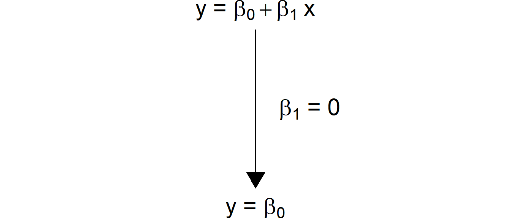
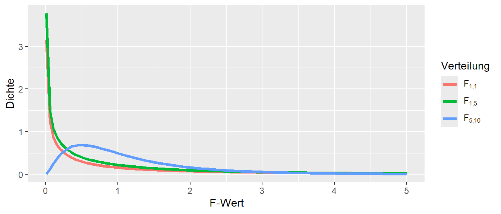
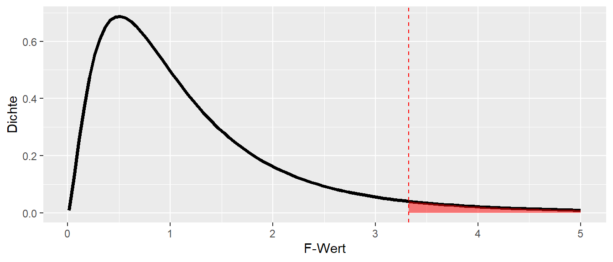
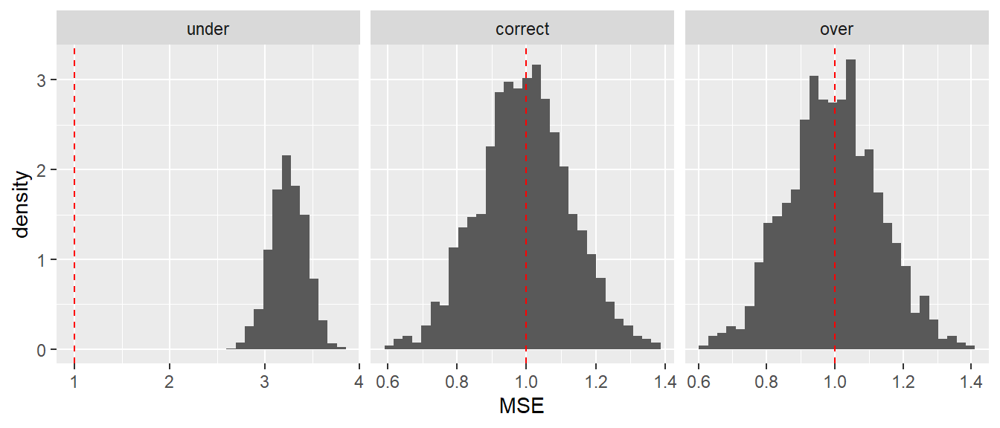
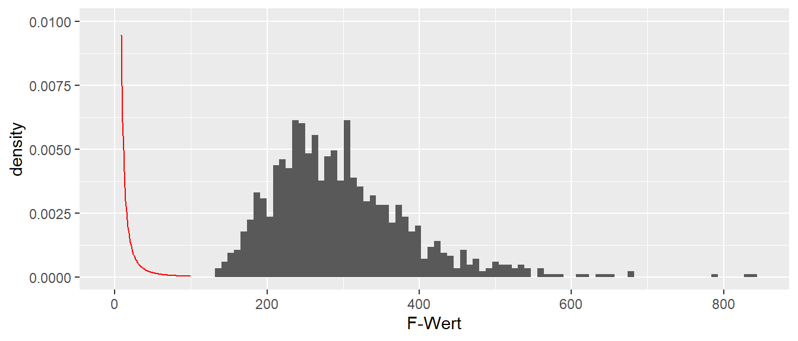
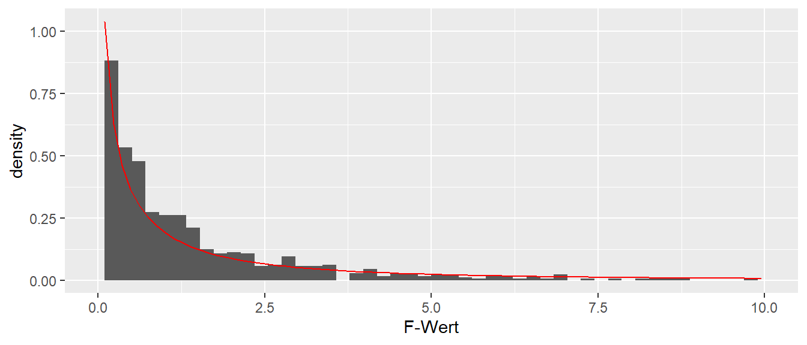
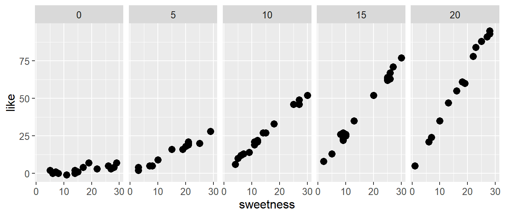
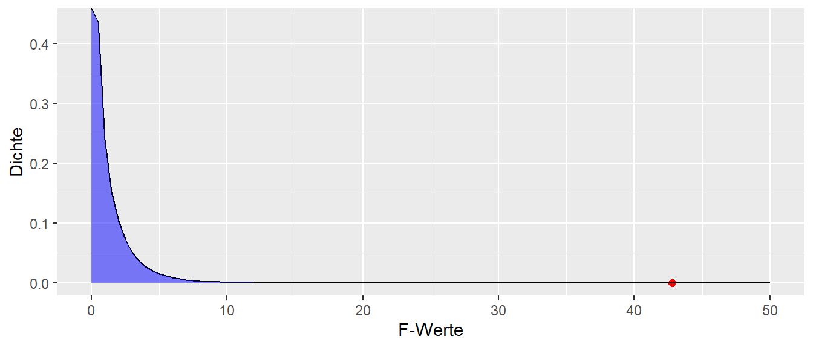
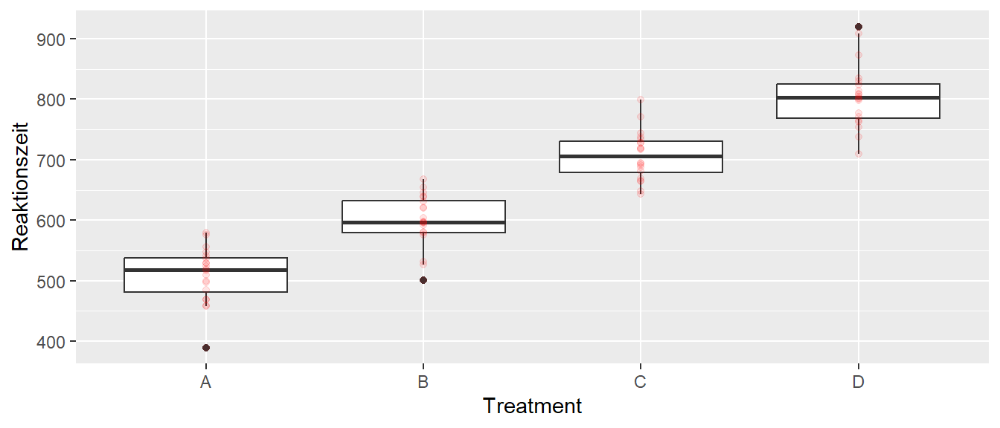

| Velocity[m/s] | body mass[kg] | arm span[cm] |
|---|---|---|
| 15.8 | 70.7 | 189.2 |
| 17.2 | 63.7 | 182.0 |
| 18.3 | 76.2 | 192.1 |
| 18.4 | 64.9 | 171.1 |
| 18.4 | 63.0 | 181.1 |
6 Multiple Lineare Regression
In den meisten Fällen in der Praxis liegt selten der einfache Fall vor, dass eine abhängige Variable mittels nur einer einzigen Prädiktorvariablen erklärt bzw. vorhergesagt werden soll. In den meisten Fällen liegt das Interesse darin den Zusammenhang mehrerer Prädiktorvariablen auf die abhängige Variable zu zu modellieren. Ein Beispiel aus der Literatur ist eine Untersuchung von Debanne und Laffaye (2011) über den Zusammenhang zwischen der Wurfgeschwindigkeit in Abhängigkeit vom Körpergewicht und der Armspannweite im Handball. In Tabelle 6.1 ist ein Ausschnitt aus dem Datensatz abgebildet.
Im Prinzip ändert sich an der Art der Daten nichts gegenüber der einfachen Regression. Die Daten beinhalten lediglich nun eine weitere Spalten mit einer weiteren Prädiktorvariablen. Im Prinzip könnte der isolierte Einfluss der beiden Prädiktorvariablen Körpermasse und Armspannweite auf die abhängige Variable Wurfgeschwindigkeit einzeln untersucht werden. Allerdings ist oft von größerem Interesse zu untersuchen, wie sich der gemeinsame Einfluss der beiden Variablen zusammen verhält und ob durch die Kombination der beiden Variablen ein besseres Modell erstellt werden kann. Aus dieser Problemstellung heraus ergibt sich die Notwendigkeit von der einfachen linearen Regression zur multiplen linearen Regression überzugehen. Formal geschieht dies einfach dadurch, dass die Formel der einfachen Regression mit dem Prädiktor \(X\) um eine weitere oder eben mehrere Variablen erweitert wird. Dementsprechend wird aus:
\[ y_i = \beta_0 + \beta_1 x_i + \epsilon_i \]
die Formel für die multiple Regression mit:
\[ y_i = \beta_0 + \beta_1 x_{1i} + \beta_2 x_{2i} + \dots + \beta_K x_{Ki} + \epsilon_i \]
Da bei der einfachen Regression nur eine einzige \(X\)-Variable in der Formel vorhanden war, ist kein Index \(j\) notwendig gewesen um die \(X\)-Variablen voneinander zu unterscheiden. Bei der multiplen Regression mit mehreren Prädiktorvariablen \(X\) wird jeder \(X\) Variable ein zusätzlicher Index \(j\) angehängt um die Variablen eindeutig identifizieren zu können. Per Konvention, wobei diese leider nicht global eingehalten wird, wird die Anzahl der Prädiktorvariablen mit \(K\) bezeichnet (oft auch \(p\)). Der \(y\)-Achsenabschnitt erhält wieder den Index \(j=0\) und die weiteren Steigungskoeffzienten \(\beta_1\) bis \(\beta_K\) erhalten den Prädiktorvariablen \(X_j\) folgend den entsprechenden Index.
In welcher Reihenfolge die Prädiktorvariablen mit \(j=1, j=2, \ldots, j=K\) verteilt werden hat zunächst keine Auswirkung auf das Modell und regelt lediglich die Bezeichnung. In unserem konkreten Fall der Handballwurfdaten wäre zum Beispiel eine mögliche Zuordnung, das \(X_1\) die Körpermasse und \(X_2\) die Armspannweite kodiert.
| \(i\) | Velocity[m/s] | body mass[kg] \(j=1\) | arm span[cm] \(j=2\) |
|---|---|---|---|
| 1 | 15.8 | 70.7 | 189.2 |
| 2 | 17.2 | 63.7 | 182.0 |
| 3 | 18.3 | 76.2 | 192.1 |
| 4 | 18.4 | 64.9 | 171.1 |
| 5 | 18.4 | 63.0 | 181.1 |
Rein formal hat sich nun der Übergang zur multiple Regression bereits vollzogen. Die Frage die sich nun direkt anschließt bezieht sich auf die Bedeutung der Koeffizienten \(\beta_1, \ldots, \beta_k\). Sind diese ebenfalls als Steigungen einer Geraden zu interpretieren? Ebenso, wie lassen sich die anderen Konzepte die bereits im Rahmen der einfachen Regression behandelt wurden haben auf die multiple Regression übertragen? Zunächst aber noch ein Beispiel.
Beispiel 6.1 In Riechman u. a. (2002) wurde ein Modell erstellt um die Leistung beim 2000m Indoor-Rudern von 12 Wettkampfruderinnen anhand eines 30-Sekunden-Ruder-Sprints, der maximalen Sauerstoffaufnahme und der Ermüdung vorherzusagen. Die Autoren bestimmten das folgende Modell: \[\begin{equation*} Zeit_{\text{2000m}} = 567.29-0.163\cdot\text{Power }-14.213\cdot \dot{V}0_{2\text{max}} + 0.738\cdot\text{Fatigue} \end{equation*}\] Mit einem Standardfehler von \(\hat{\sigma} = 0.96\).
6.1 Bedeutung der Koeffizienten bei der multiplen Regression
Um die Bedeutung der Regressionskoeffzienten bei der multiple Regression besser zu verstehen ist es von Vorteil sich noch einmal die Bedeutung der Koeffizienten im einfachen Regressionsmodell zu vergegenwärtigen (siehe Abbildung 6.1).

Bei der einfachen Regression wurde mittels der Methode der kleinsten Quadrate eine Regressionsgerade durch die Punktwolke der Daten gelegt. Dabei wurde die Regressionsgerade so gewählt, dass die senkrechten Abstände der beobachteten Punkte von der Regressionsgerade minimiert werden bzw. die Abstände zwischen denen auf der Gerade liegenden, vorhergesagten Werte \(\hat{y}_i\) und den beobachteten Wert \(Y_i\) (Residuen). Wird nun der Übergang von einer Prädiktorvariablen zum nächstkomplizierteren Fall mit zwei Prädiktorvariablen \(X_1\) und \(X_2\) durchgeführt, dann ist eine mögliche Darstellungsform der Daten eine Punktwolke im dreidimensionalen Raum (siehe Abbildung 6.2 (a)).


Da jetzt eine einzelne Gerade nicht mehr ausreichend ist um die Daten zu fitten, wird nun eine Ebene durch die Punktwolke gelegt (siehe Abbildung 6.2 (b)). Dieser Ansatz ermöglicht nun die gleiche Herangehensweise wie bei der einfachen linearen Regression anzuwenden. Als Zielgröße wird aus den möglichen Ebenen diejenigen Ebene gesucht, deren vorhergesagte, in der Ebene liegende, Punkte \(\hat{y}_i\) die geringsten, senkrechten Abstand zu den tatsächlich beobachteten Punkten \(y_i\) haben (wieder Residuen). Anders ausgedrückt, es wird diejenigen Ebene durch die Punktwolke gesucht deren Summe der quadrierten Residuen \(e_i = y_i - \hat{y}_i\) minimal ist. Die Definition der Residuen ist dabei genau gleich derjenigen bei der einfachen linearen Regression.
Diese Herangehensweise hat den Vorteil, dass sie zum einem die einfache lineare Regression als Spezialfall mit \(K=1\) beinhaltet und sich beliebig erweitern lässt. Lediglich mit der Einschränkung, dass bei \(K>2\) die dreidimensionale Darstellung mittels einer Grafik nicht mehr möglich ist da nicht ausreichend Dimensionen dargestellt werden können. Das Prinzip der Minimierung der Abweichungen von \(\hat{y}_i\) zu \(y\) von einer Ebene bleibt aber weiter erhalten. D.h. alle Konzepte die im Rahmen der einfachen linearen Regression erarbeitet wurden, lassen sich direkt auf die multiple lineare Regression übertragen.
Zusammenfassend:
- Die Berechnungen beim Übergang von der einfachen zur multiplen Regression bleiben alle gleich
- Die Abweichungen, die Residuen \(\hat{\epsilon_i}\) sind nun nicht mehr Abweichungen von einer Gerade sondern von einer \(K\)-dimensionalen Hyperebene. Die grundlegenden Eigenschaften der Residuen bleiben alle erhalten.
- Die Modellannahmen bleiben alle gleich: Unabhängige \(y_i\) und \(\epsilon_i \sim \mathcal{N}(0,\sigma^2)\) iid
- Inferenz für die Koeffizienten mittels \(t_k = \frac{\hat{\beta}_k}{s_k} \sim t(N-K-1)\) bleiben erhalten und übertragen sich auf die Konfidenzintervalle
- Alle Konzepte für die Vorhersage bleiben erhalten
- Modelldiagnosetools bleiben ebenfalls alle erhalten
Die Interpretation von \(\beta_0\) ist vollkommen identisch mit derjenigen bei der einfachen linearen Regression. Bei der einfachen linearen Regression bedeutete der Koeffizient \(\beta_0\) derjenige Wert, den das Modell annimmt, der vorhergesagte Wert \(\hat{Y}\), wenn die Prädiktorvariable \(X\) den Wert \(0\) annimmt. Graphisch ist dies der \(y\)-Achsenabschnitt. Bei der multiplen Regression bleibt diese Interpretation erhalten und \(\beta_0\) ist nun der Wert \(\hat{Y}\) wenn alle Prädiktorvariablen den Wert \(0\) annehmen. Graphisch ist dies der Schnittpunkt der Modellebene mit der \(y\)-Achse, also ebenfalls der \(y\)-Achsenabschnitt (siehe Abbildung 6.2 (b)).
Die Interpretation der Modellkoeffizienten \(\beta_1, \beta_2, \ldots, \beta_K\) bleibt zunächst auch gleich derjenigen aus der einfachen Regression. Der Koeffizient \(\beta_j, (j\neq0)\) gibt den Unterschied zwischen zwei Objekten an die sich um eine Einheit bezüglich der Variablen \(X_j\) unterscheiden. Der Steigungskoeffizient \(\beta_i\) drückt dabei die Information der Variable \(X_i\) aus, wenn der gemeinsame Anteil von \(X_i\) mit allen anderen Prädiktorvariablen \(X_j, j \neq i\) rausgerechnet, bereinigt, wurde. Anders ausgedrückt: Welche zusätzliche Information wird erhalten , wenn die Variable \(X_i\) in das Modell integriert wird, wenn schon alle anderen Variablen \(X_j, j \neq i\) im Modell enthalten sind. D.h., das multiple Regressionsmodell kontrolliert automatisch immer den Einfluss der anderen \(K-1\) Variablen bei der Betrachtung der Variablen \(x_i\). Nochmal als Liste:
- \(\hat{\beta}_1\): Wenn \(X_2\) bekannt ist, welche zusätzlichen Informationen wird durch \(X_1\) über \(Y\) erhalten.
- \(\hat{\beta}_2\): Wenn \(X_1\) bekannt ist, welche zusätzlichen Informationen wird durch \(X_2\) über \(Y\) erhalten.
6.1.1 Added-variable plots
Die Idee hinter den sogenannten added-variable plots basiert auf den isolierten Einfluss einer Variable auf die abhängige Variable abzubilden. Dazu wird wieder eine einfache lineare Regression von \(Y\) gegen \(X_1\) berechnet und eine einfache Regression von \(X_1\) auf \(X_2\). Von beiden Regressionen werden die resultierenden Residuen in einem Streudiagramm gegeneinander abgetragen (siehe Abbildung 6.3).

Wenn eine multiple Regression mit mehr als zwei Prädiktorvariablen gerechnet wird, dann werden im added-variable plot jeweils alle \(K-1\) Variablen aus \(x_i\) und \(y\) herausgerechnet. D.h. \(Y\) und \(X_i\) werden um den Einfluss aller, verbleibenden \(X_j, j \neq i\) bereinigt. Die Darstellung von added-variable plots ist daher im Zusammenhang einer multiplen Regressionsanalyse immer von Vorteil um den Einfluss einzelner Variablen auf die abhängige Variable zu beurteilen.
Da ein Steigungskoeffizientt \(\beta_i\) immer den Beitrag der Information von \(X_i\) über denjenigen der anderen Prädiktorvariablen hinaus bestimmt, stellt sich die Frage was passiert wenn im Modell eine oder mehrere Prädiktorvariablen weggelassen werden.
6.1.2 Was passiert wenn eine Prädiktorvariable weggelassen wird?
In Tabelle 6.2 sind Koeffizienten aus einem synthetischen Modell abgebildet.
| \(\hat{\beta}\) | \(s_e\) | |
|---|---|---|
| (Intercept) | 1.077 | 0.066 |
| x1 | 2.965 | 0.056 |
| x2 | 0.708 | 0.060 |
Was passiert nun, wenn anstatt einer multiplen Regression mit beiden Prädiktorvariablen zwei Einzelmodelle als einfache lineare Regression gefittet werden. Die Modell enthalten dabei jeweils mit eine der Prädiktorvariablen? Bleiben die Werte der Koeffizienten gleich derjenigen im multiplen Regressionsmodell? Dazu wird erst einmal das Modell mit nur der Prädiktorvariablen \(X_1\) berechnet:
coef(lm(y ~ x1, df))(Intercept) x1
1.007466 3.017589 Im Vergleich zum multiplen Regressionsmodell (siehe Tabelle 6.2) hat sich der Modellkoeffizient verändert. Die Größe des Werts ist zwar in einem ähnlichen Bereich, die Werte sind aber nicht genau gleich. Das Gleiche nun für \(X_2\):
coef(lm(y ~ x2, df))(Intercept) x2
1.3377771 0.9555316 Wieder ist der Wert des Modellskoeffizient anders als derjenige im multiplen Regressionsmodell (siehe Tabelle 6.2). Wieder ist die Größenordnung des Wertes aber ähnlich. Aus Sicht der vorgehenden Ausführungen betrachtet, deutet die Veränderung der Werte darauf hin, dass die Information die die Prädiktorvariablen über \(Y\) aussagen sich ändert wenn die jeweils andere Variable im Modell enthalten ist.
6.2 Multikollinearität
Sei nun ein anderer Datensatz betrachtet (Beispiel aus Kutner u. a. 2005). Im Rahmen einer Untersuchung sind Körperfettmessungen durchgeführt an \(20\) Personen durchgeführt worden. Neben einer Gesamtkörpermessung wurde auch der Körperfettanteil am Oberarm, Unterarm und am Oberschenkel bestimmt. In Tabelle 6.3 ist ein Ausschnitt der Daten abgebildet.
| Oberarm | Unterarm | Oberschenkel | Gesamt |
|---|---|---|---|
| 19.5 | 43.1 | 29.1 | 11.9 |
| 24.7 | 49.8 | 28.2 | 22.8 |
| 30.7 | 51.9 | 37.0 | 18.7 |
| 29.8 | 54.3 | 31.1 | 20.1 |
| 19.1 | 42.2 | 30.9 | 12.9 |
| 25.6 | 53.9 | 23.7 | 21.7 |
Als Modell sollen der Gesamtkörperfettanteil mit Hilfe der drei verschiedenen Messungen bestimmt werden.
\[ Y_{\text{Körperfettanteil}} = \beta_0 + \beta_1 \cdot X_{\text{Oberarm}} + \beta_2 \cdot X_{\text{Unterarm}} + \beta_3 \cdot X_{\text{Oberschenkel}} + \epsilon \]
Um die Daten besser zu verstehen wird zunächst betrachtet, wie stark die Werte miteinander korrelieren (siehe Abbildung 6.4).

Wie bei Körperfettwerten nicht anders zu erwarten, korrelieren die Prädiktorvariablen relativ stark miteinander. Die Korrelation zwischen den Oberschenkeldaten und den Oberarmdaten in dieser Stichprobe ist sogar \(>0.9\). Die Frage ist nun, wie sich diese Korrelation auf den Modellfit auswirkt, wenn nur Teilmengen der Prädiktorvariablen zur Anpassung verwenden werden. Insgesamt können vier verschiedene Modelle verwendet werden. Ein Modell mit allen Prädiktorvariablen und drei weitere Modelle bei denen wir jeweils eine der Prädiktorvariablen weglassen.
In Tabelle 6.4 sind nur die Steigungskoeffizienten für die vier verschiedenen Modell abgebildet.
| Oberarm | Oberschenkel | Unterarm | |
|---|---|---|---|
| Alle | 4.33 | -2.86 | -2.19 |
| ohne Unterarm | 0.22 | 0.66 | |
| ohne Oberschenkel | 1.00 | -0.43 | |
| ohne Oberarm | 0.85 | 0.10 |
Es ist zu beobachten, dass für diese Daten die Werte der Modellkoeffizienten sich sehr stark ändern in Abhängigkeit von welche Variablen in dem Modell enthalten sind. Beispielsweise änder der Koeffizient für den Oberschenkel nicht nur seine Größe sondern auch sein Vorzeichen, je nachdem ob der Ober- oder der Unterarm oder beide im Modell enthalten sind. D.h. durch die Korrelation der Prädiktorvariablen untereinander kommt es dazu, dass die Modellkoeffizienten sehr stark schwanken in Abhängigkeit von der Variablenkombination. Wird dies wieder aus der Sicht der Information betrachtet ist dieser Effekt eigentlich auch zu erwarten. Die Interpretation der Modellkoeffizienten bei der multiplen Regression war oben hergeleitet als, wie viel Information die neue Variablen liefert nachdem die anderen Variablen schon im Modell berücksichtigt wurden. Wenn die Variablen nun sehr stark miteinander korrelieren, dann bringt eine neue Variable wenige neue Information in das Modell über diejenige Information die schon durch die anderen Variablen repräsentiert wird. D.h. bei der multiplen Regression ist die Betrachtung der Beziehung der Prädiktorvariablen miteinander wichtig bei der Beurteilung des Modells. Dieses Konzept ist so wichtig, dass es einen eigenen Namen bekommt. Wenn mehrere Variablen in einem Modell miteinander korrelieren, dann wird dies als Multikollinearität bezeichnet.
Definition 6.1 (Multikollinearität) Wenn in einem Modell Prädiktorvariablen miteinander korrelieren, dann wird dies als Multikollinearität bezeichnet.
Multikollinearität hat verschiedene Einflüsse auf das Modell die sich vor allem hinsichtlich der Stabilität der Koeffizienten auswirken, wenn Prädiktorvariablen aus dem Modell herausgenommen werden bzw. dazugenommen werden. Dazu beeinflusst Multikollinearität auch die Größe der Standardfehler der geschätzten Koeffizienten \(\hat{\beta}_j\).
Multikollinearität hat unter anderem die folgenden Effekte:
- Große Änderungen in den Koeffizienten wenn Prädiktoren ausgelassen/eingefügt werden
- Koeffizienten haben eine andere Richtung als erwartet
- Hohe (einfache) Korrelationen zwischen Prädiktoren
- Breite Konfidenzintervalle für “wichtige” Prädiktoren \(b_j\)
Es lässt sich zeigen, dass die Varianz der geschätzten Modellkoefizienten \(b_j\) die folgende Form hat (siehe Gleichung 6.1):
\[ \widehat{\text{Var}}(b_j) = \frac{\hat{\sigma}^2}{(n-1)s_j^2}\frac{1}{1-R_j^2} \tag{6.1}\]
Der Term \(R_j^2\) wird als multipler Korrelationskoeffizient bezeichnet und beruht auf dem Determinationskoeffizienten der Prädiktorvariablen \(X_i, i\neq j\) auf die Prädiktorvariable \(X_j\). D.h. es wird ein Regressionsmodell gerechnet, bei dem die Prädiktorvariable \(X_j\) als abhängige Variable verwendet wird und mittels der anderen \(p-1\) Prädiktorvariablen modelliert wird. Der zweiter Term in Gleichung 6.1 \(\frac{1}{1-R_j^2}\) wird als Variance Inflation Factor (VIF) bezeichnet (siehe Gleichung 6.2).
\[ \text{VIF}_j = \frac{1}{1-R_j^2} \tag{6.2}\]
Wie der Name bereits andeutet, kommt es durch die Korrelation der Prädiktorvariablen untereinander es zu einer Inflation der Varianzen. D.h. die Standardfehler, die Wurzeln der jeweiligen Varianzen, der Modellparameter werden größer. Dies kann dann dazu führen, dass die Modellkoeffizienten keine statistische Signifikanz erreichen obwohl ein klarer Zusammenhang zwischen der Prädiktorvariablen und der abhängigen Variablen besteht.
Anhand Gleichung 6.1 ist weiter zu erkennen, dass wenn der Determinantionskoeffizient \(R^2_j\), also die Korrelation der Prädiktorvariablen \(j\) mit den anderen Prädiktorvariablen größer wird, der zweite Term ebenfalls größer wird und dementsprechend die Varianz größer wird.
Der \(VIF_j\) bietet daher eine einfache Möglichkeit, zumindest heuristisch, das gefittete Regressionsmodell auf Multikollinearitäten zu überprüfen. Bei der Interpretation der VIF gibt es allerdings keinen magischen Wert der eineindeutig Probleme identifiziert. Im Allgemeinen werden die VIFs niemals komplett null sein. Bei der Beurteilung von Problemen auf Grund von Multikollinearität wird üblicherweise der größte VIF Wert im Modell betrachtet.
Tipp
Wenn VIF > 10 ist, dann deutet dies auf hohe Multikollinearität hin.
Manchmal wird in der Literatur auch die sogenannte Tolerance = \(\frac{1}{VIF}\), der Inverse Wert des VIF betrachtet.
\[ \text{Tolerance}_j = \frac{1}{\text{VIF}_j} = 1 - R^2_j \tag{6.3}\]
Tipp
Wenn der \(\text{Tolerance}_j\) nahe bei \(1\) ist, spricht dies für keine relevante Multikollinearität, während Werte \(<0.1\) auf Problem hindeuten.
Hinsichtlich des Einflusses bzw. des Umgangs bei Multikollinearität muss unterschieden werden, welches Ziel die Modellierung verfolgt. Das Problem das durch die Multikollinearität entsteht ist, basiert darauf das das Modell nicht eindeutig zuordnen kann, welche der miteinander korrelierten Variable für die beobachteten Veränderungen in der abhängigen Variablen \(Y\) zuständig ist. Multikollinearität vermindert dabei nicht die Fähigkeit des Modells Mittelwerte \(E[y|x]\) vorherzusagen oder einen guten Modellfit zu erhalten. Allerdings verkompliziert sich die Interpretation der Modellkoeffizienten \(\hat{\beta}_j\). Dadurch das die Prädiktorvariablen miteinander korrelieren, kann es beispielsweise gar nicht praktisch möglich sein die Variablen einzeln zu variieren, wodurch die Interpretation des Koeffizienten \(b_j\) als die Veränderung von \(y\) bei Veränderung von \(x_j\) um eine Einheit problematisch wird. Da die Multikollinearität die Varianzen der Modelkoeffizienten vergrößert, kann es zu dem Fall kommen, dass ein Modellkoeffizienten \(b_j\) statistisch nicht signifikant ist, obwohl eindeutig ein Zusammenhang zwischen \(x_j\) und \(y\) besteht. Zusätzlich, da die Modellkoeffizienten bei starken Multikollinearität eher instabil sind und sich stark bei Veränderung des Modells verändern können ist deren Interpretation grundsätzlich problematisch.
Beispiel 6.2 (Gehparameter bei Älteren) Die Beziehung zwischen gebrechlichen älteren Menschen und der Gehgeschwindigkeit ist entscheidend, um den Bedarf an Langzeitpflege oder erhöhter Unterstützung zu minimieren. Insbesondere ist der Zusammenhang zwischen Gehleistung, respiratorischer Funktion und dynamischem Gleichgewicht bei älteren Menschen, die auf Langzeitpflege angewiesen sind, noch nicht gut verstanden. Zu diesem Zweck wurde in Jiroumaru u. a. (2023) der Zusammenhänge zwischen Gehgeschwindigkeit, Atemmuskelkraft und dynamischem Gleichgewicht mittels multipler Regressionsanalyse untersucht.
Die Atemmuskelkraft wurde mittels des maximalen inspiratorische (PImax) und des maximalen exspiratorische Drucks (PEmax) bestimmt. Der maximale Doppelschrittlängentest (MDST) wurde als Index für das dynamische Gleichgewicht verwendet. Eine multiple Regressionsanalyse wurde durchgeführt, wobei die Gehgeschwindigkeit (normale und maximale Gehgeschwindigkeit) als abhängige Variable und PImax, PEmax sowie MDST als unabhängige Variablen verwendet wurden. Zusätzlich wurde das Geschlecht als Anpassungsvariable berücksichtigt und in den Daten als entweder \(0\) oder \(1\) kodiert. Die Daten sind im repository zum Skriptum zu finden. Eine Analyse der Daten für die abhängige Variable maximale Gehgeschwindigkeit (mws) führte zu folgendem Ergebnis:
| \(\hat{\beta}\) | \(s_e\) | |
|---|---|---|
| (Intercept) | -0.089 | 0.144 |
| Pemax | 0.005 | 0.002 |
| mdst | 0.811 | 0.157 |
| Pimax | 0.005 | 0.003 |
| gender | -0.121 | 0.083 |
D.h. es wurde ein statistisch signifikanter Zusammenhang der maximalen Gehgeschwindigkeit mit PEmax und MDST beobachtet. Eine Untersuchung der VIF-Werte deutete auf keine starken Multikollineariäten zwischen den Variablen hin (siehe Tabelle 6.5).
| Prädiktor | VIF |
|---|---|
| Pemax | 2.1 |
| mdst | 1.3 |
| Pimax | 1.9 |
| gender | 1.5 |
6.3 Interaktionseffekte
Bisher sind die Variablen in das multiple Regressionsmodell nur additiv eingegangen. D.h. in der Modellspezifikation sind die Prädiktorvariablen \(x_i\) immer nur mit einem \(+\) in die Formel eingegangen. Im folgenden soll nun untersucht werden, was passiert wenn die Prädiktorvariablen auch multiplikativ in das Modell eingehen. Dies führt dann zu sogenannten Interaktionseffekten.
Ausgangspunkt sei wieder der Handballdatensatz. Ziel ist es noch immer, die Wurfgeschwindigkeit anhand der Körpermasse und der Armspanweite zu modellieren (siehe Tabelle 6.6).
| Mean | Std.Dev | Min | Max | |
|---|---|---|---|---|
| Armspannweite[cm] | 184.29 | 7.72 | 169.43 | 200.74 |
| Körpermasse[kg] | 77.46 | 10.26 | 57.95 | 101.12 |
| Wurfgeschwindigkeit[m/s] | 21.85 | 2.31 | 18.50 | 29.22 |
In Tabelle 6.6 ist zunächst einmal nichts auffallendes zu sehen. Vielleicht sind die Wurfgeschwindigkeiten etwas zu niedrig für Hochleistungshandballer, aber das stört die weitere Analyse der Daten. Als nächstes erfolgt eine Betrachtung der Daten mittels von Streudiagrammen.


In beiden Graphen ist mit etwas gutem Willen ein positiver Zusammenhang zwischen den jeweiligen Prädiktorvariablen und der Wurfgeschwindigkeit zu identifizieren. Für das Körpergewicht in Abbildung 6.5 (a) vielleicht etwas mehr als für die Armspannweite in Abbildung 6.5 (b).
Nun sollen die Daten mittels eines linearen Modells modelliert werden.
\[ Y_{i} = \beta_0 + \beta_1 \cdot \textrm{bm}_i + \beta_2 \cdot \textrm{as}_i + \epsilon_i \]
Bei Betrachtung der Modellparameter (siehe Tabelle 6.7) ist zu erkennen, dass die Steigungskoeffizienten zwar knapp statistisch signifikant sind, aber in Bezug auf die Residualvarianz bzw. den Standardfehler \(\hat{\sigma}\) eine ziemlich hohe Restunsicherheit \(\hat{\sigma} = 1.9958\) aufweisen. Dies macht die Vorhersage letztendlich unbrauchbar.
| \(\hat{\beta}\) | \(s_e\) | t | p | |
|---|---|---|---|---|
| (Intercept) | -1.768 | 7.632 | -0.232 | 0.818 |
| body_mass | 0.077 | 0.033 | 2.359 | 0.024 |
| arm_span | 0.096 | 0.044 | 2.192 | 0.035 |
| \(\hat{\sigma}\) | 1.996 |
Der \(y\)-Achsenabschnitt \(\beta_0\) im Modell macht auch ebenfalls keinen Sinn, da er, verbal übersetzt ausdrückt, dass ein Handballer mit einer Spannweite von \(0\)cm und einer Körpermasse von \(0\) Kg eine Wurfgeschwindigkeit von \(v = -1.8\)m/s erreichen würde. Um den \(y\)-Achsenabschnitt interpretierbar zu machen zentrieren wir diese Variable, so dass der Mittelwert bei Null liegt. Dazu wird von jedem Wert der Mittelwert der Variable abgezogen. Dies ändert wieder nichts an dem Modellfit, aber der \(y\)-Achsenabschnitt bekommt dadurch einen sinnvollen Wert.
Nun wird wieder da gleiche Modell angepasst, wobei die zentrierten Variablen als Prädiktorvariablen verwendet werden.
Wie erwartet ändert dies nichts an den Modellwerten, bis auf den \(y\)-Achsenabschnitt. Der Wert von \(21.8\) ist jetzt dahingehend zu interpretieren, dass ein Handballer mit einer Armspannweite von \(184\)cm und einer Körpermasse von \(77\)Kg eine Wurfgeschwindigkeit von \(21.9\)m/s erreichen sollte (siehe Tabelle 6.6 und Tabelle 6.8).
| \(\hat{\beta}\) | \(s_e\) | t | p | |
|---|---|---|---|---|
| (Intercept) | 21.852 | 0.316 | 69.247 | <0.001 |
| body_mass_c | 0.077 | 0.033 | 2.359 | 0.024 |
| arm_span_c | 0.096 | 0.044 | 2.192 | 0.035 |
| \(\hat{\sigma}\) | 1.996 |
Nun erfolgt wie immer eine Betrachtung der Residuen \(e_i\) im zentrierten, additiven Modell (Model 2) (siehe Abbildung 6.6).

Da die Werte für kleine und große vorhergesagte Werte \(\hat{y}_i\) ganz klar ein Muster aufweisen, kann davon ausgegangen werden, das das Modell eine in den Daten vorhandene Struktur nicht zu modellieren im Stande ist. Ein Möglichkeit besteht nun darin einen sogenannten Interaktionseffekt in das Modell zu integrieren.
Definition 6.2 (Interaktionseffekt) Wenn der Effekt einer unabhängigen Variable auf die abhängige Variable davon abhängt welche Ausprägung eine weitere unabhängige Variable hat, dann wird dies als ein Interaktionseffekt bezeichnet.
In Abgrenzung zu Interaktionseffekte werden die normalen Effekte als Haupteffekte bezeichnet.
Definition 6.3 (Haupteffekte ) Haupteffekte beschreiben den isolierten Einfluss einer unabhängigen Variable auf die abhängige Variable, unabhängig von anderen Variablen im Modell.
Im Rahmen eines linearen Modells, wird ein solcher Interaktionseffekt durch einen multiplikativen Term zwischen den beiden Variablen modelliert.
\[ Y_{i} = \beta_0 + \beta_1 \times \textrm{bodymass}_i + \beta_2 \times \textrm{armspan}_i + \beta_3 \times \textrm{bodymass}_i \times \textrm{armspan}_i + \epsilon_i \tag{6.4}\]
In der Formel Gleichung 6.4 ist neben den beiden Modellkoeffizienten \(\beta_1\) und \(\beta_2\) jetzt ein weiterer Koeffizienten \(\beta_3\) einhalten. Dieser Koeffizient bildet den Interaktionseffekt. Die \(X\)-Werte die diesem Modellkoeffizienten zugeordnet sind, berechnen sich aus Produkt aus den beiden beteiligten Prädiktorvariablen. In dem vorliegenden Handballbeispiel aus dem Produkt aus Armspannweite und Körpergewicht body_mass \(\cdot\) arm_span. Dies ist der Interaktionseffekt.
Im Handballbeispiel folgt daraus die folgende Modellanpassung (siehe Tabelle 6.9)
| \(\hat{\beta}\) | \(s_e\) | t | p | |
|---|---|---|---|---|
| (Intercept) | 21.346 | 0.143 | 149.296 | <0.001 |
| body_mass_c | 0.119 | 0.015 | 8.133 | <0.001 |
| arm_span_c | 0.083 | 0.019 | 4.380 | <0.001 |
| body_mass_c:arm_span_c | 0.021 | 0.002 | 12.633 | <0.001 |
| \(\hat{\sigma}\) | 0.868 |
Bei Betrachtung der Residualvarianz \(\hat{\sigma}\) ist zu beobachten, dass sich der halbiert hat. D.h das Interaktionsmodell scheint deutlich präziser den Zusammenhang zwischen den Prädiktorvariablen und der abhängigen Variablen abbilden zu können, als dies bei dem rein additiven Modell der Fall war. Zusätzlich haben sich die Standardfehler der beiden Steigungskoeffizienten für die Haupteffekte deutlich verringert (vgl. Tabelle 6.8). Beide Koeffizienten sind nun statistisch signifikant geworden. Der neu dazugekommene Koeffizient für den Interaktionseffekt ist ebenfalls statistisch signifikant mit einem sehr kleinen Standardfehler. D.h die Hinzunahme des Interaktionseffekts hat in dem vorliegenden Beispiel dazu geführt, dass der Modellfit deutlich verbessert wurde.
Abschließend nun eine Betrachtung der resultierenden Flächen unter additiven und dem Interaktionsmodell. In Abbildung 6.7 sind die gefitteten Flächen und die Residuen unter den beiden Modellen abgebildet.


Unter dem Interaktionsmodell ist die gefittete Fläche keine einfache Ebene mehr, sondern durch die Hinzunahme des Interaktionseffekts ähnelt die Fläche nun eher einem Sattel. D.h. durch die Integration von Interaktionseffekte zwischen den Prädiktorvariablen können deutlich komplizierte Zusammenhänge zwischen den Prädiktorvariablen und der abhängigen Variable modellieren werden. Die Komplexität erhöht sich entsprechend mit der Zahl der Prädiktorvariablen und den möglichen Interaktion zwischen diesen.
Zurückkommend auf unser Ausgangsbeispiel mit den Handballdaten, kann entsprechend die Auswirkung auf den die Modellanpassung analysiert werden. Dazu ein Vergleich der beiden Residuenplots (siehe Abbildung 6.8).


Es ist zu beobachten, dass in Abbildung 6.8 (b) die Struktur, die im additiven Modell in Abbildung 6.8 (a) für die Residuen , nun nicht mehr vorhanden ist. Ähnlich verhält sich auch der Vergleich für die die qq-Plots der Residuen (siehe Abbildung 6.9).


Dazu nun ein Vergleich der weiteren Modellfitparameter.
| Name | Model | R2 | R2_adjusted | RMSE | Sigma |
|---|---|---|---|---|---|
| mod_2 | lm | 0.291 | 0.252 | 1.919 | 1.996 |
| mod_3 | lm | 0.869 | 0.859 | 0.824 | 0.868 |
Insgesamt sind durch die Hinzunahme des Interaktionseffekt nicht nur die Standardfehler und der Residualfehler verringert worden, sondern das Modell fittet die Daten auch deutlich besser als das additive Modell. Dies ist natürlich nicht immer der Fall, sondern hängt eng mit den jeweiligen Daten zusammen.
6.4 Take-away
Das Interaktionsmodell:
- Erhöht die Flexibilität des linearen Modells.
- Bei Interaktionen hängt der Einfluss der einzelnen Variablen immer von den Werten der anderen Variablen ab.
- Achtung: Interpretation der einfachen Haupteffekte oft nicht mehr möglich bzw. sinnvoll!
6.4.1 Take-away
- Bei der multiplen Regression wird das Modell um zusätzliche Prädiktorvariablen erweitert
- Die Interpretation der Modellkoeffizienten ist bezieht sich auf den Einfluss der jeweiligen Variblen über denjenigen der anderen Variablen hinaus
- Die Korrelation der Prädiktorvariablen, die Multikollinearität, untereinander kann zu unvorhergesehenen Effekten bei den Modellkoeffizienten führen
6.5 Nominale Variablen im Modell
Sei das folgende Beispiel gegeben (siehe Abbildung 6.10)

Es wurde ein Datensatz ähnlich einem Reaktionszeitexperiment erstellt, bei dem Probanden jeweils unter einer von vier verschiedenen Konditionen \(A,B,C\) und \(D\) beobachtet wurden. Die deskriptive Daten sind Tabelle 6.11 einsehbar. Der Einfachheit halber sind die Daten so generiert, dass die Gruppenmittelwert von \(A\) nach \(D\) immer größer werden.
| Gruppe | \(\bar{y}_j\) | \(s_j\) | \(\Delta_{j-A}\) |
|---|---|---|---|
| A | 509.53 | 45.66 | |
| B | 599.68 | 43.57 | 90.15 |
| C | 706.94 | 40.49 | 197.41 |
| D | 805.09 | 52.51 | 295.56 |
Die letzten Spalte zeigt die Abweichungen der Gruppenmittelwerte der Gruppen \(B,C,D\) von der Gruppe \(A\) an. Nun führen wir eine sogenannten Referenzgruppe bzw. Referenzstufe ein. Sei z.B. die Gruppe \(A\) die Referenzgruppe. Problem ist es nun die Gruppen bzw. die Zugehörigkeit der einzelnen Datenpunkte auf die Prädiktorvariablen im multiplen linearen Regressionsmodell abzubilden. D.h. es ist notwendig eine Abbildung von \({A,B,C,D} \mapsto X_i\) zu definieren. Dies lässt mit der Einführung von sogenannten Indikatorvariblen (auch Dummyvariablen) erreichen und führt zu der folgenden Kodierung der Daten (siehe Tabelle 6.12).
| x1 | x2 | x3 | |
|---|---|---|---|
| A | 0 | 0 | 0 |
| B | 1 | 0 | 0 |
| C | 0 | 1 | 0 |
| D | 0 | 0 | 1 |
Es werden drei Indikatorvariablen \(x_1, x_2\) und \(x_3\) eingeführt. Wenn ein Datenwert \(Y_i\) aus Gruppe \(A\), der Referenzgruppe, kommt, dann werden die die Indikatorvariablen \(X_{1i}, X_{2i}, X_{3i}\) mit den Werten \((0,0,0)\) belegt. Wenn ein Wert \(Y_i\) aus Gruppe \(B\) kommt, dann mit \((1,0,0)\) belegt, aus Gruppe \(C\) dann \((0,1,0)\) und aus Gruppe \(D\) dann mit \((0,0,1)\).Es folgt ein Modell der Form:
\[ y_i = \beta_0 + \beta_1 x_{1i} + \beta_2 x_{2i} + \beta_3 x_{3i} + \epsilon_i \]
Wird nun mittels dieser Kodierung ein lineares Modell in die Reaktionszeitdaten gefittet ergibt dies den folgenden Modellfit (siehe Tabelle 6.13).
| \(\hat{\beta}\) | \(s_e\) | t | p | |
|---|---|---|---|---|
| (Intercept) | 509.526 | 10.235 | 49.784 | <0.001 |
| groupB | 90.150 | 14.474 | 6.228 | <0.001 |
| groupC | 197.414 | 14.474 | 13.639 | <0.001 |
| groupD | 295.561 | 14.474 | 20.420 | <0.001 |
Die Steigungskoeffizienten \(\beta_i, i=1,\ldots,3\) geben nun genau die die Abweichungen der Mittelwerte der jeweiligen Faktorstufen von der Referenzstufe \(A\) (siehe Tabelle 6.12). Der Steigungskoeffizient \(\beta_0\) hat dagegen genau den Mittelwert der Werte aus Gruppe \(A\). D.h. mittels der Indikatorvariablen haben wir das folgende Modell erhalten:
\[ y_i = \mu_A + \Delta_{B-A} x_{1i} + \Delta_{C-A} x_{2i} + \Delta_{D-A} x_{3i} + \epsilon_i \]
Um die Abweichungen von der Referenzgruppe zu modellieren sind drei Indikatorvarialben \(x_{1i}, x_{2i}\) und \(x_{3i}\) eingeführt worden. Die Modellkoeffizienten bilden somit jeweils die Abweichungen der Mittelwerte von der Referenzgrppe \(A\) ab. Insgesamt ermöglicht somit die Verwendung von Indikatorvariablen nominale Variable mit beliebig vielen Faktorstufen in einem linearen Modell abzubilden.
Definition 6.4 (Indikator-/Dummyvariablen ) Eine Dummyvariable, auch Indikatorvariable genannt, ist eine binäre Prädiktorvariable die nur die Werte \(0\) oder \(1\) annimmt. Mit einer Dummyvariable kann die An- bzw. Abwesenheit eines kategorialen Effekts modelliert werden.
Der Ansatz mit Indikatorvariablen lässt sich dabei wie folgt Verallgemeinern (siehe Tabelle 6.14).
| \(x_1\) | \(x_2\) | \(\ldots\) | \(x_{K-1}\) | |
|---|---|---|---|---|
| Referenz (\(j=1\)) | 0 | 0 | 0 | |
| \(j=2\) | 1 | 0 | \(\ldots\) | 0 |
| \(j=3\) | 0 | 1 | \(\ldots\) | 0 |
| \(j=K\) | 0 | 0 | \(\ldots\) | 1 |
Bei Integration einer nominalen Variable mit \(K\) Faktorstufen werden \(K-1\) Indikatorvariablen \(X_1, X_2, \ldots, X_{K-1}\) benötigt. Eine der Faktorstufen wird als Referenzstufe definiert. Die Indikatorvariablen \(X_1\) bis \(X_{K-1}\) kodieren dann die Abweichungen der anderen Stufen von der Referenzstufe. Diese Art der Kodierung wird in der Literatur auch als treatment Kodierung bezeichnet. Die Indikatorvariablen werden oft auch als Dummyvariablen bezeichnet
Mit der Integration von nominalen Variablen in das Modell ist dann auch die Unterscheidung in ANOVA und linear Regression als überfällig anzusehen, da beide letztendlich auf dem gleichem Modell, nämlich dem linearen Modell, beruhen.
Es folgt wieder eine kurze Betrachtung des Residuenplots (siehe Abbildung 6.11).

Es ist wieder zu sehen, dass nur vier verschiedene \(\hat{y}_i\) Werte vorhergesagt werden, nämlich die Mittelwerte \(\bar{y}_k\) in den jeweiligen \(K\) Gruppen. Die Residuen \(e_i\) streuen daher nur um diese vorhergesagten Werte.
6.6 Kombination von kontinuierlichen und nominalen Prädiktorvariablen
Da durch die Verwendung von Indikatorvariablen die Unterscheidung zwischen nominalen und kontinuierlichen Variablen in der Modellierung aufgehoben wird, können beide Typen von Variablen in einem Modell integriert werden. In Abbildung 6.12 ist ein hypothetischen Zusammenhang zwischen der körperlichen Leistung dem Trainingsalter und dem Gender abgetragen.

Das Trainingsalter (ta) geht wie bisher als kontinuierliche Variable in das Modell ein, während gender als nominale Variable über eine Dummyvariable modelliert wird. Weibliche Teilnehmerinnen der Studie werden als Referenzstufe festgelegt. Das resultiert dann in dem folgenden linearen Modell:
\[ \begin{aligned} Y_i &= \beta_{ta = 0,x_{1i}=0} + \Delta_m \cdot x_{1i} + \beta_{ta} \cdot ta + \epsilon_i \\ x_1 &= \begin{cases} 0\text{ wenn weiblich}\\ 1\text{ wenn männlich} \end{cases} \\ \end{aligned} \]
Modellierung führt dann zu:
| term | estimate | std.error | statistic | p.value |
|---|---|---|---|---|
| (Intercept) | 41.181 | 1.083 | 38.024 | 0 |
| gender_fm | -10.877 | 0.805 | -13.503 | 0 |
| ta | 1.927 | 0.145 | 13.261 | 0 |
Die Variable gender ist als Dummyvariable definiert worden und der Steigungskoeffizient \(\beta_1=\) gender_fm kodiert den mittleren Unterschied zwischen männlichen und weiblichen Studienteilnehmerinnen. Der \(Y\)-Achsenabschnitt kodiert daher die Leistung von weiblichen Teilnehmerinnen mit einem Trainingsalter von ta\(= 0\). (Warum?). Der Graph der Datenpunkte zusammen mit den resultierenden Modellgraphen der vorhergesagten \(\hat{y}_i\) zeigt an wie das Modell die Daten modelliert (siehe Abbildung 6.13).

Es wurden zwei Geraden modelliert. Eine Gerade für die weiblichen und eine für die männlichen Teilnehmer. Die Geraden sind parallel zueinander und um den Wert von \(\beta_1\) gegeneinander verschoben.
Natürlich ist es auch nun möglich mit dem Indikatorvariablenansatz auch eine Interaktion zwischen kontinuierlichen und nominalen Variablen zu modellieren. Wenn die Daten zum Beispiel dem Trend in Abbildung 6.14 folgen würden.

Hier ist zu sehen, dass die Zunahme der Leistung mit dem Trainingsalter nicht gleich ist in beiden gender Gruppen. Bei den männlichen Teilnehmern ist der Zuwachs mit dem Trainingsalter größer. D.h der Einfluss der Prädiktorvariable Trainingsalter hängt mit der Ausprägung der Prädiktorvariablen gender zusammen. Es liegt ein Interaktionseffekt vor. Übertragen auf ein lineares Modell könnte der Modellansatz wie folgt aussehen:
\[ y_i = \beta_{ta=0,x_{1i}=0} + \Delta_m \times x_{1i} + \beta_{ta} \times ta + \beta_{ta \times gender} \times x_{1i} \times ta + \epsilon_i \]
In lm() ausgedrückt:
mod <- lm(perf ~ gender_f * ta, lew)| term | estimate | std.error | statistic | p.value |
|---|---|---|---|---|
| (Intercept) | 31.354 | 1.370 | 22.891 | 0 |
| gender_ff | 8.575 | 2.010 | 4.266 | 0 |
| ta | 1.763 | 0.195 | 9.043 | 0 |
| gender_ff:ta | 2.362 | 0.290 | 8.139 | 0 |
Die gefitteten Regressionsgeraden nehmen dann die folgende Form an (siehe Abbildung 6.15).

Zunächst sollen Modellkoeffizienten mit Hilfe des Graphen interpretiert werden. Dazu wird die Prädiktorvariable für das Alters ta um den Wert \(\bar{ta} = 6\) zentriert und die Modellanpassung erfolgt mittels der zentrierten Variable.
lew <- lew |> mutate(ta_c = ta - ta_cen)
mod_c <- lm(perf ~ gender_f * ta_c, lew)In Tabelle 6.17 sind die neuen Koeffizienten zu sehen. Sie unterscheiden sich nur für \(\beta_0\) und \(\beta_1\) zu den Koeffizienten von Tabelle 6.16 (Warum?).
ta_c) und Gender.
| coef | term | estimate |
|---|---|---|
| \(\beta_0\) | (Intercept) | 41.934 |
| \(\beta_1\) | gender_ff | 22.750 |
| \(\beta_2\) | ta_c | 1.763 |
| \(\beta_3\) | gender_ff:ta_c | 2.362 |
Wie sind die Modellkoeffizienten zu interpretieren? Die Referenzgruppe sind die Datenpunkte der männlichen Gruppe. Daher ist der \(Y\)-Achsenabschnitt \(\beta_0 = 41.93\) die Performance einer durchschnittlichen, männlichen Versuchsperson mit einem Trainingsalter von ta\(= 6\). Der zweite Koeffizient \(\beta_1 = 22.75\) kodiert hier den Unterschied zwischen einer männlichen und einer weiblichen Versuchsperson jeweils mit einem Trainingsalter von ta\(=6\). Der Steigungskoeffizient \(\beta_2 = 1.76\) dagegen, kodiert den Unterschied zwischen zwei männlichen Versuchspersonen, die sich um ein Trainingsjahr ta voneinander unterscheiden. Der letzte Koeffizient \(\beta_3 = 2.36\), der Interaktionskoeffizient kodiert nun den Unterschied in den Steigungen zwischen den männlichen und den weiblichen Versuchspersonen. Um den Unterschied zwischen zwei weiblichen Versuchsperson zu erhalten, die sich um ein Trainingsjahr ta voneinander Unterscheiden, müssen daher \(\beta_2\) und \(\beta_3\) miteinander addiert werden \(4.12\).

In Abbildung 6.16 sind die einzelnen Modellkoeffizienten aus Tabelle 6.16 in der Grafik miteingefügt. Die Interpretation der Werte sollte damit klarer werden.
6.6.1 Take-away
In diesem Abschnitt wurde gezeigt, dass auch nominale Prädiktorvariablen ohne Probleme in das lineare Modell integrieren können. Dabei können die Variablen rein additiv oder auch als interaktive Effekte eingehen. Damit ist der Prozess um Daten zu modellieren deutlich flexibler geworden. Dabei bleibt aber immer die bekannten Rückführung auf Punkt-Steigungs-Modell erhalten.
In den bisherigen Kapiteln sind die behandelten Modelle Stück für Stück immer komplizierter geworden. Angefangen mit dem einfachen linearen Modell, wurde die Erweiterung zum additiven multiplen linearen Modell mit mehreren \(X\)-Variablen vollzogen. Im nächsten Schritt konnten die \(X\)-Variablen miteinander interagieren, während im letzten Schritt die Anforderung aufgehoben wurde, dass die \(X\)-Variablen kontinuierlich sein mussten. Im Kern wurde aber immer das einfache Modell der Punkt-Steigungsform beibehalten. Im Zuge der Behandlung von Indikatorvariablen wurde eine direkte Verbindung zwischen dem linearen Modell und dem t-Test hergeleitet. Im folgenden Abschnitt wird nun eine direkte Verbindung zwischen dem Regressionsmodell und der Varianzanalyse hergeleitet, bei der es sich letztendlich nur um eine Verallgemeinerung des t-Test handelt.
6.7 Genereller Linearer Modell Testansatz
Ausgangspunkt ist wieder das Modell der einfachen linearen Regression, mit nur einer \(X\)-Variable.
mod0 <- lm(y ~ x, simple)
summary(mod0)
Call:
lm(formula = y ~ x, data = simple)
Residuals:
1 2 3 4
-0.5817 0.9898 -0.2345 -0.1736
Coefficients:
Estimate Std. Error t value Pr(>|t|)
(Intercept) 1.8414 0.7008 2.628 0.119
x 0.4574 0.3746 1.221 0.346
Residual standard error: 0.8376 on 2 degrees of freedom
Multiple R-squared: 0.4271, Adjusted R-squared: 0.1406
F-statistic: 1.491 on 1 and 2 DF, p-value: 0.3465Zunächst werden wieder die Residuen betrachtet, die Abweichungen der beobachteten Daten \(y_i\) von der vorhergesagten Werten der Regressionsgeraden \(\hat{y}_i\). Im Rahmen der Behandlung des Determinationskoeffizienten \(R^2\) sind bereits Quadratsummen und deren Unterteilung besprochen worden. Dort wurde die Aufteilung der Varianz von \(Y\), bezeichnet als \(SSTO\), die totale Varianz in die beiden Komponenten Regressionsvarianz \(SSR\) und Fehlervarianz \(SSE\) eingeführt.
\[ SSTO = SSR + SSE \]
Die Fehlerquadratsumme SSE, die Summe der quadrierten Abweichungen zwischen dem beobachteten Wert \(y_i\) und dem vorhergesagten Wert \(\hat{y}_i\) ist definiert mittels:
\[ SSE = \sum_{i=1}^n (y_i - \hat{y}_i)^2 \]
Also letztendlich wieder nur die Summe der quadrierten Residuen. Um für gegebene Daten die vorhergesagten Werte \(\hat{y}_i\) berechnen zu können, wird ein Modell und die dazugehörigen Modellkoeffizienten \(\beta_0\) und \(\beta_1\) benötigt. Das einfache lineare Modell hat in diesem Fall zwei Modellparameter. Streng genommen besitzt das Modell noch einen weiteren Parameter nämlich \(\sigma^2\), da \(\sigma^2\) für die Berechnung der \(\hat{y}_i\) nicht unbedingt notwendig ist, kann er erstmal ignoriert werden. Zuvor wurde bereits die Anzahl der Modellparameter formalisiert und als eigener Parameter bezeichnet. Per Konvention wird die Parameteranzahl mit \(p\) bezeichnet. Im einfachen Fall mit den beiden Parametern \(\beta_0\) und \(\beta_1\) gilt daher \(p = 2\).
Die Anzahl der Parameter \(p\) spielt eine Rolle wenn die sogenannten Freiheitsgrade \(df\) (degrees of freedom) bestimmt werden müssen. Umgangssprachlich bezeichnen die Freiheitsgerade die Anzahl der Daten die frei variiert werden können. Die tatsächliche Definition ist komplizierter und auch nicht immer eindeutig. Die Freiheitsgrade für die Fehlerquadratsumme \(SSE\) berechnet sich mittels der Formel \(N-p\). \(N\) bezeichnet die Anzahl der Beobachtungen, in unserem Fall die Anzahl der Datenpunkte.
\[ df_E := N - p \]
Die Freiheitsgerade \(df\) bestimmen die effektive Anzahl der Beobachtungen die zur Verfügung stehen um die Varianz \(\sigma^2\) des Modells abzuschätzen. Dadurch, dass zwei Parameter anhand der Daten für das Modell bestimmt werden, fallen zwei Datenpunkt als unabhängige Informationsquellen weg. Anders ausgedrückt, wenn die beiden Modellparameter \(\beta_0\) und \(\beta_1\) bekannt sind, dann sind nur noch \(N-2\) Datenpunkt frei variierbar. Sobald die Werte von \(N-2\) Datenpunkten und die beiden Parameter bekannt, können die verbleibenden beiden Werte berechnet werden. Daher der Begriff der Freiheitsgrade.
Wenn \(SSE\) durch die Anzahl der Freiheitsgerade geteilt wird, dann lässt sich zeigen, das dieser Wert ein erwartungstreuer Schätzer für die Residualvarianz \(\sigma^2\) unter der Verteilungsannahme \(\epsilon_i \sim \mathcal{N}(0,\sigma^2)\) der Daten ist. Das Verhältnis von \(SSE\) zu \(df\) wird als Mean Squared Error (\(MSE\)) bezeichnet.
\[ MSE = \frac{SSE}{df_{E}} = \frac{\sum_{i=1}^n (y_i - \hat{y}_i)^2}{N-p} = \hat{\sigma}^2 \tag{6.5}\]
Im Allgemeinen bedeutet groß \(SS\) immer, das es sich um die Summe von quadrierten Werten handelt (\(S\)um of \(S\)squares) während ein \(M\) bedeutet das die Quadratsumme durch ihre Freiheitsgrade geteilt wurde (\(M\)ean).
Tipp
Tatsächlich ist der Ansatz in Gleichung 6.5 schon bekannt und bei der Stichprobenvarianz \(s^2\) angewendet worden. Wenn eine Stichprobe der Größe \(N\) mit Werten \(y_i\) vorliegt, dann wird die Stichprobenvarianz mittels der bekannten Formel berechnet:
\[ \hat{\sigma}^2 = s^2 = \frac{1}{N-1}\sum_{i=1}^N(y_i - \bar{y})^2 \]
Was bei dieser Formel vielleicht schon immer etwas undurchsichtig gewesen ist, ist der Nenner mit \(N-1\) anstatt einfach \(N\) wie es vom Mittelwert bekannt ist. Hier kommen die Freiheitsgerade zum Einsatz. Um die Varianz überhaupt berechnen zu können, wird ein Parameter, den Mittelwert \(\hat{y}\) der \(y_i\) benötigt. Der Mittelwert wird allerdings anhand der Daten berechnet. Dies führt dazu, dass nach Berechnung von \(\hat{y}\) nur noch \(N-1\) Werte frei variiert werden können. Sobald, neben dem Mittelwert \(\bar{y}\), \(N-1\) Werte bekannt sind, kann der verbleibenden \(N\)-ten Wert berechnet werden. Durch die Berechnung des Mittelwerts ist daher ein Freiheitsgrad verloren gegangen. Der Zähler bei der Varianz ist wieder eine Summe quadrierter Abweichungen also ein \(SS\) und damit wird die Varianz \(s^2\) insgesamt zu einer \(MS\).
Seien die Datenpunkte \([1,2,3,4,5]\) gegeben. Der Mittelwert \(\hat{y} = 3\). Wenn nun \(N-1=4\) Werte, z.B. die ersten vier Wert \([1,2,3,4]\) und der Mittelwert bekannt sind, dann ist der fünfte Wert festgelegt.
\[ \bar{y} = 3 = \frac{1}{5} (1+2+3+4+y_5) = \frac{1}{5}(10+y_5) \Leftrightarrow (3\cdot 5)-10=y_5 \]
Das Ziel ist nun eine Metrik zu entwickeln die es erlaubt abschätzen, ob die Hinzunahme von zusätzlichen Modellparametern zu einer Verbesserung der Modellvorhersage führt. D.h. der Analyseprozess startet mit einem einfachen Modell und sukzessive werden weitere Variablen zum Modell hinzugefügt und es wird überprüft ob dadurch die Modellvorhersage verbessert wird. Eine Verbesserung wird in diesem Fall über die Veränderung in \(SSE\) ermittelt. Wenn zusätzliche Modellparameter zu einer Verbesserung führen, dann sollte eine relevante Reduktion der Fehlervarianz \(SSE\) beobachtet werden. Die Residuen werden kleiner und die Präzision der Vorhersagen wird verbessert. Als Randbedingung sollen die zu vergleichenden Modelle in einer Hierarchie zueinander stehen. Dies bedeutet, dass einfachere Modelle als Teilmodelle von komplexeren Modellen interpretiert werden.
Dazu wird zunächst eine Unterscheidung zwischen einem vollem Modell (\(F\)ull model) und einem reduzierten Modell (\(R\)educed model) getroffen. Als das volle Modell wird immer das kompliziertere Modell, also dasjenige mit größerem \(p\), bezeichnet. Dementsprechend ist das reduzierte Modell das weniger komplizierte Modell, welches einem Spezialfall des vollen Modell entspricht. Dabei ist die Bezeichnung voll bzw. reduziertes Modell immer nur temporär. Ein volles Modell kann bei einem weiteren Vergleich zum reduzierten Modell werden. Im weiteren wird bei der Bezeichnung der Modell die englische Bezeichung (full vs. reduced) verwendet. Für das Beispiel der einfachen lineare Regression ist das full model das bekannte Modell:
\[ Y_i = \beta_0 + \beta_1 X_i + \epsilon_i, \quad \epsilon_i \sim \mathcal{N}(0,\sigma^2) \]
Um die Residualvarianzen \(SSE\) für die beiden Modell voneinander unterscheiden zu können, werden diese mit \(SSE(F)\) für das full model und \(SSE(R)\) für das reduced model bezeichnet. Die Residualvarianz \(SSE(F)\) berechnet sich wie oben angegeben mittels:
\[ \textrm{SSE(F)} = \sum_{i=1}^N(y_i - \hat{y}_i)^2 = \sum_{i=1}^N [y_i - (\beta_0 + \beta_1 x_i)]^2 \tag{6.6}\]
Dieses Modell hat \(p = 2\) Modellparameter und somit \(df_{F} = N - p = N - 2\) Freiheitsgrade.
Nun kann die Frage gestellt werden, ob der Modellparameter \(\beta_1\) wirklich benötigt wird? Vielleicht zeigt die \(X\)-Variable gar keinen Zusammenhang mit der \(Y\)-Variable und durch die Inklusion von \(X\) wird letztendlich nur Datenrauschen im Modell angepasst. Aus dieser Überlegung heraus, ist es möglich ein reduziertes Modell zu formulieren bei dem der Parameter \(\beta_1\) fehlt.
\[ Y_i = \beta_0 + \epsilon_i, \quad \epsilon_i \sim \mathcal{N}(0,\sigma^2) \]
Die Residualvarianz \(SSE(R)\) für dieses reduzierte Modell berechnet sich nun mittels.
\[ \textrm{SSE(R)} = \sum_{i=1}^N (y_i - \beta_0)^2 \]
Im reduzierten Modell ist nur noch ein Paramter \(\beta_0\) vorhanden, somit gilt \(p = 1\) und entsprechend \(df_{R} = N - 1\).
Mit etwas Algebra lässt sich zeigen, dass im Allgemeinen \(SSE(F) \leq SSE(R)\) gilt. Dieser Zusammenhang lässt sich auch heuristisch herleiten. Wenn es keinen Zusammenhang zwischen \(X\) und \(Y\) gibt, dann wird der \(\beta_1\) im full model nahezu \(0\) sein und Formel \(\eqref{eq-mlm-hier-ssef}\) wird zu \(SSE(R)\). Im realistischen Fall wird aber, selbst wenn kein Zusammenhang zwischen \(X\) und \(Y\) besteht, ein Teil des immer vorhandenen Rauschens in den Daten mittels \(\beta_1\) gefittet. Das führt dazu, das praktisch immer \(SSE(F)\) etwas kleiner ist als \(SSE(R)\). Somit folgt der beschriebene Zusammenhang zwischen \(SSE(F)\) und \(SSE(R)\).
HinweisReduziertes Modell und Stichprobenvarianz
Zwischen der Residualvarianz im reduzierten Modell \(SSE(R)\), dem optimalen Modellparameter \(\beta_0\) und der Stichprobenvarianz besteht ein enger Zusammenhang bzw. Identität wie sich anhand der folgenden Herleitung sehen lässt. Der Modellparameter \(\beta_0\) im reduzierten Modell soll, wie üblich, unter der Minimierung der Summe der Quadrate der Abweichungen, sprich \(SSE(R)\), ermittelt werden.
\[ \begin{aligned} SSE(R) &= \sum_{i=1}^n(y_i - \beta_0)^2 \\ &= \sum_{i=1}^n (y_i^2 - 2y_i\beta_0 + \beta_0^2) \end{aligned} \]
Das Minimum \(min[SSE]\) wird bestimmt, indem, wie schon beim einfachen Regressionsmodell, nach dem Modellparameter \(\beta_0\) abgeleitet und das Resultat \(=0\) gesetzt wird. Ein bisschen Algebra führt zu:
\[ \begin{aligned} 0 &= \frac{\mathrm{d}}{\mathrm{d} \beta_0}\sum_{i=1}^n (y_i^2 - 2y_i\beta_0 + \beta_0^2) \\ &= \sum_{i=1}^n (-2y_i + 2 \beta_0) \\ &= -2\sum_{i=1}^n y_i + 2\sum_{i=1}^n \beta_0\\ \Leftrightarrow n\beta_0 &= \sum_{i=1}^n y_i \\ \beta_0 &= \frac{\sum_{i=1}^n y_i}{n} = \bar{y} \end{aligned} \]
Somit ist derjenige Wert von \(\beta_0\), der im reduzierten Modell die Abweichungen minimiert, der Mittelwert \(\bar{y}\). Daraus folgt wiederum, dass im reduzierten Modell mit der Modellgleichung \(y_i = \beta_0 + \epsilon_i\) für alle \(i\), also alle Datenpunkte, der gleiche Vorhersagewert bestimmt wird, nämlich der Mittelwert \(\bar{y}\) der Stichprobe. Daraus folgt wiederum, das der Schätzer für \(\sigma^2\), nämlich \(MSE\) also \(SSE(R)/df\) ist. Die Freiheitsgrade berechnen sich, wie bereits erwähnt, mittels \(N - p\), wobei für \(p\) im reduced model \(p = 1\) gilt, da nur ein einziger Modellparameter vorhanden ist, eben \(\beta_0\). Daraus folgt für \(\hat{\sigma}^2\):
\[ \begin{aligned} \hat{\sigma}^2 &= MSE(R) = \frac{SSE(R)}{df} = \frac{SSE(R)}{N-p} \\ &= \frac{SSE(R)}{N-1} = \frac{1}{N-1}\sum_{i=1}^N (y_i - \hat{\beta}_0)^2 \\ &= \frac{1}{N-1}\sum_{i=1}^N (y_i - \bar{y})^2 = s^2 \end{aligned} \]
Diese Gleichung ist aber nur der bereits bekannte Schätzer der Stichprobenvarianz \(s^2\). Somit gilt für das reduced model:
\[ \textrm{SSE(R)} = \sum_{i=1}^N (y_i - \beta_0)^2 = \sum_{i=1}^N(y_i - \bar{y})^2 = \textrm{SSTO} \]
Sei nun das reduzierte Modell korrekt. D.h. die Hinzunahme von \(X\) sollte keine Verbesserung des Modells, keine Verbesserung in der Modellvorhersage, nach sich ziehen. Konkret bedeutet dies, dass \(SSE(R)\) und \(SSE(F)\) in etwas gleich groß sein sollten, bzw. \(SSE(F)\) nur wenig besser (also kleiner) als \(SSE(R)\) ist. Wenn die Differenz der beiden Quadratsummen gebildet wird, dann sollte diese Differenz entsprechend eher klein sein.
\[ \textrm{SSE(R)} - \textrm{SSE(F)} \tag{6.7}\]
Beide Modelle sind in etwas gleich gut, fitten die Daten also in etwa gleich gut. Das volle Modell etwas besser, das es durch den zusätzlichen Parameter etwas flexibler als das reduzierte Modell ist.
Sei nun von von der entgegen gesetzten Annahme ausgegangen. Das reduzierte Modell ist falsch und die Variable \(X\) wird benötigt um die Varianz in \(Y\) aufzuklären. In diesem Fall sollte die Differenz Gleichung 6.7 einen deutlich größeren Wert annehmen. Das reduzierte Modell kann denjenigen Teil der Varianz von \(Y\) nicht aufklären der durch \(X\) entsteht. Dadurch wandert die durch \(X\) verursachte Varianz in die Residuen, was dazu führt das \(SSE(R)\) größer wird. Im vollem Modell dagegen, kann die durch \(X\) entstehende Varianz durch den zusätzlichen Modellparameter \(\beta_1\) erklärt werden und entsprechend sind die Residuen geringer. Wenn die Residuen geringer werden führt das wiederum dazu, dass der Wert von \(SSE(F)\) kleiner wird.
Zusammengefasst, aus der Differenz in den \(SSE\) zwischen den beiden Modellen, kann heuristisch eine Metrik hergeleitet werden. Diese Metrik erlaubt verschiedene Modelle miteinander zu vergleichen. Wenn das reduzierte, einfachere, Modell ausreicht um die Daten zu erklären, dann wird die Differenz Gleichung 6.7 eher klein ausfallen. Wenn dagegen die zusätzlichen Parameter im vollem Modell benötigt werden und die Varianz in \(Y\) zu erklären, dann wird der Unterschied Gleichung 6.7 eher groß werden.
Beispiel 6.3 Es sei einfacher Datensätze gegeben. Der Datensatz folgt dem Modell \(Y = 3 + 2X_1+ \epsilon\). Im Datensatz ist noch eine weitere Variable \(X_2\) die keinen Zusammenhang mit \(Y\) aufweist. In R
set.seed(1)
df <- tibble(
x_1 = -2:2,
x_2 = c(-2,0,-1,2,3),
y = 3 + 2*x_1 + rnorm(5)
)
df# A tibble: 5 × 3
x_1 x_2 y
<int> <dbl> <dbl>
1 -2 -2 -1.63
2 -1 0 1.18
3 0 -1 2.16
4 1 2 6.60
5 2 3 7.33Nun werden drei Modelle an die Daten angepasst. Ein reduziertes Modell mit nur einem \(Y\)-Achsenabschnitt, ein Modell mit der Variable \(X_1\) und ein Modell mit beiden Variablen \(X_1\) und \(X_2\). Laut Konstruktion der Daten, hat \(X_2\) keinen Zusammenhang mit \(Y\) und ist daher überflüssig für die Modellanpassung. Das Modell ist überparametrisiert. Die \(SSE\) können mittels der Funktion sigma() durch Quadrieren und Multiplikation mit den Freiheitsgraden berechnet werden. Entsprechend folgt in R:
mod_r <- lm(y ~ 1, df)
mod_f <- lm(y ~ x_1, df)
mod_u <- lm(y ~ x_1 + x_2, df)Es resultieren die folgenden \(SSE\) der Modelle:
sigma(mod_r)**2 * (5-1)[1] 56.98863sigma(mod_f)**2 * (5-2)[1] 2.589782sigma(mod_u)**2 * (5-3)[1] 1.131329Der Unterschied zwischen mod_r und mod_f ist noch sehr groß, während der Unterschied zwischen mod_f und mod_u deutlich kleiner ausfällt. Allerdings ist \(SSE\) für das überparametrisierte Modell mod_u trotzdem durch Zufall kleiner.
In dem Beispiel wurden drei Modell an die Daten angepasst. Es hätte auch ein Vergleich zwischen dem Modell mod_r und mod_u gemacht werden können. Allerdings unterscheiden sich die beiden Modell nicht mehr nur um einen Modellparameter sondern um zwei Modellparameter. Dies sollte auch bei Veränderungen im \(SSE\) berücksichtigt werden, da die Bewertung der Bedeutsamkeit eines Unterschieds zwischen zwei Modellen noch davon abhängig ist, um wie viele Parameter sich die beiden Modelle voneinander unterscheiden. Wenn im vollen Modell \(p = 10\) Parameter sind und im reduzierten Modell nur \(p = 1\) Parameter ist, dann ist ein gegebener Unterschied in den \(SSE\)s zwischen den Modellen anders zu bewerten, als wenn im vollem Modell \(p = 2\) Parameter geschätzt werden. Bei gleichem Unterschied zwischen den Modellen ist der Unterschied im ersteren Fall weniger bedeutsam im Vergleich zum letzteren Fall. Daher erscheint es sinnvoll den Unterschied zwischen den Modellen noch anhand des Unterschieds in der Anzahl der Parameter zu kalibrieren. Anders formuliert, es wird die Veränderung in der Varianzverkleinerung pro Freiheitsgrad betrachtet. So können nun auch Modelle mit größeren Unterschieden in der Parameteranzahl \(p\) miteinander verglichen werden.
Mit \(p_F\) = Anzahl der Parameter im vollen Modell und \(p_R\) = Anzahl der Parameter im reduzierten Modell gilt:
\[ p_{F} - p_{R} = p_{F} - p_{R} + N - N = (N - p_{R}) - (N - p_{F}) = df_{R} - df_{F} \]
Hinweis
Nach dem ersten Gleichheitszeichen wurde ein mathematischer Trick angewendet, indem eine \(0\) in Form von \(+N-N\) addiert wurde. Dies ermöglicht von der Beschreibung der Parameteranzahl \(p_{F}\) bzw. \(p_{R}\) auf die Schreibweise mit Freiheitsgraden zu wechseln. Achtung, die Reihenfolge der Modellparameter ändert sich beim Übergang von \(p\) zu \(df\). Als Merkhilfe, der Unterschied muss positiv sein, d.h. es wird immer der größere Wert vom kleineren Wert abgezogen.
Somit wird der Unterschied zwischen den beiden Modellen folgendermaßen aufgeschrieben und der Term erhält auch noch eine eigene Bezeichnung \(MS_{\textrm{test}}\) für mean squared test.
\[ MS_{\textrm{test}} = \frac{\textrm{SSE(R)} - \textrm{SSE(F)}}{df_{R} - df_{F}} \tag{6.8}\]
Unter der Annahme, das das reduzierte Modell korrekt und den üblichen Modellannahmen im Regressionsmodell zur Normalverteilung der Residuen \(\epsilon_i \sim \mathcal{N}(0,\sigma^2)\), lässt sich zeigen, dass \(MS_{\textrm{test}}\) ein Schätzer für die Varianz \(\sigma^2\) ist. D.h. es gilt:
\[ MS_{\textrm{test}} = \hat{\sigma}^2 \]
D.h. neben dem schon bekannten Schätzer \(MSE\) für \(\sigma^2\) wird durch \(MS_{\textrm{test}}\) eine weiterer Schätzer für \(\sigma^2\) erhalten. Aus der Annahme, das das reduzierte Modell korrekt ist, folgt, dass auch das volle Modell korrekt ist. Das volle Modell enthält das reduzierte Modell als einen Spezialfall. Der zusätzlich Parameter im vollen Modell sollte in diesem Fall, in der Nähe von \(0\) sein, da kein Zusammenhang zwischen \(X\) und \(Y\) besteht wenn das reduzierte Modell korrekt ist. Daraus folgt, dass \(MSE(F)\) ebenfalls ein Schätzer für die Varianz \(\sigma^2\) unter den Modellannahmen \(\epsilon_i \sim \mathcal{N}(0,\sigma^2)\) ist. Diese Eigenschaft wurde schon die ganze Zeit bei der Berechnung der Regressionen verwendet.
\[ MSE_{F} = \frac{\textrm{SSE(F)}}{df_{F}} = \hat{\sigma}^2 \]
Insgesamt, werden durch durch diese Überlegungen zwei unterschiedliche Berechnungen erhalten, um \(\sigma^2\) anhand der Daten zu schätzen. Einmal über das bekannte \(MSE\) und nun neu dazu gekommen über \(MS_{\text{test}}\). Die Beziehung zwischen dem vollen und dem reduzierten Modell kann nun auch dahingehend interpretiert werden, das das reduzierte Modell gleich dem vollen Modell ist, allerdings mit einer zusätzlichen Randbedingung. Die Randbedingung ist, dass der zusätzliche Parameter im vollen Modell den fixen Wert \(0\) hat. Wenn das volle Modell die folgende Form hat:
\[ Y = \beta_0 + \beta_1 \cdot X_1 + \epsilon \]
Und das reduzierte Modell die Form:
\[ Y = \beta_0 + \epsilon \]
Wie eben beschrieben, kann das reduzierte Modell als das volle Modell mit der Randbedingung \(\beta_1 = 0\) interpretiert werden.
\[ Y = \beta_0 + \beta_1 \cdot X_1 + \epsilon, \quad \beta_1 = 0 \]
Daher läuft ein Vergleich der beiden Modell darauf hinaus zu testen ob der Parameter \(\beta_1 = 0\) ist. Dies erklärt auch noch mal die Interpretation, dass das volle Modell korrekt ist, wenn das reduzierte Modell korrekt ist. Das reduzierte Modell ist nur ein Spezialfall des vollen Modells (siehe Abbildung 6.17) .

Nun fehlt noch ein letzter Schritt um die Metrik abzuschließen. Da es sich bei der Größe \(MS_{\textrm{test}}\) letztendlich um eine Varianz handelt, kann die Größe der Quadratsummen verändern werden, indem die Einheiten der abhängigen Variablen \(Y\) verändert werden. Wenn die abhängige Variable \(Y\) beispielsweise eine Länge darstellen, dann würde beim Übergang von \([m]\) auf \([cm]\), der Unterschied in Formel Gleichung 6.8 um den Faktor \(10\times 10=100\) vergrößert werden ohne das wirklich eine Veränderung in den Modellen stattgefunden hat. Daher wird \(MS_{\textrm{test}}\) noch einmal normiert, indem der Term durch \(MS_{E(F)}\) geteilt wird. Damit fallen alle Probleme mit der Interpretation der Größe der Modellunterschiede durch Änderungen in den Einheiten weg (siehe auch Maxwell u. a. 2004, p.75).
\[ \frac{MS_{\textrm{test}}}{MS_{E(F)}} = \frac{\frac{\textrm{SSE(R)} - \textrm{SSE(F)}}{df_{E(R)} - df_{E(F)}}}{ \frac{\textrm{SSE(F)}}{df_{E(F)}}} \tag{6.9}\]
Dies stellt nun die finale Metrik dar. Es lässt sich nun wieder zeigen, diese Metrik unter der Annahme, das das reduzierte Modell korrekt ist, einer theoretische Verteilung folgt. Dies ist die \(F\)-Verteilung mit \(df_{E(R)} - df_{E(F)}\) und \(df_{E(F)}\) Freiheitsgeraden (Die Herleitung würde leider wieder den Umfang des Skript sprengen). Die Annahme das das reduzierte Modell korrekt ist, stellt somit wieder die \(H_0\) dar.
\[ F = \frac{MS_{\textrm{test}}}{MS_{E(F)}} \sim F(df_{E(R)}-df_{E(F)},df_{E(F)}) \]
Zur Erinnerung sind in Abbildung 6.18 nochmal ein paar Beispiele für \(F\)-Verteilung mit verschiedenen Freiheitsgeraden abgebildet.

Da beide Terme in Gleichung 6.9 die Varianz abschätzen deutet ein Wert in der Nähe von \(1\) daraufhin, das das reduzierte Modell adäquat ist um die Daten zu beschreiben und die Hinzunahme des Parameters im vollen Modell keine Verbesserung liefert.
Sobald nun aber wieder eine bekannte, theoretische Verteilung unter einer \(H_0\) vorhanden ist, kann wieder das bereits bekannte Instrumentarium zur Hypothesentestung angewendet werden. Fällt der beobachtete Wert \(F\)-Wert für ein gegebenes \(\alpha\) in einen kritischen Bereich (siehe Abbildung 6.19 für ein Beispiel), dann kann dies als Evidenz gegen die \(H_0\) interpretiert werden. Wir sind überrascht diesen Wert unter der \(H_0\) zu beobachten und lehnen die \(H_0\), das das einfachere Modell korrekt ist ab. Der beobachtete \(F\)-Wert wird als Evidenz dafür gewertet, das das komplexere, volle Modell die Daten besser abbildet und statistisch signifikant mehr Varianz der abhängigen Variable modellieren kann.

Um diesen letzten Schritt noch einmal besser zu verstehen sei im Folgenden eine weitere Simulation in Anlehnung an Beispiel Beispiel 6.3 betrachtet. Gegeben sei ein DGP mit der folgenden Form:
\[ y_i = 3 + 2 \cdot x_i + \epsilon_i \quad \epsilon_i \sim \mathcal{N}(0,1) \tag{6.10}\]
Der DGP ist demnach wieder ein einaches lineares Regressionsmodell mit den Modellparametern \(\beta_0 = 3\), \(\beta_1 = 2\) und normalverteilten Residuen mit \(\sigma = 1\). Dieser DGP wird nun mit \(N = 30\) Datenpunkten mit entsprechenden Datenpaare \((y_i,x_i)\) insgesamt \(N_{sim} = 1000\) mal simuliert. In jedem der \(1000\) Durchgänge werden drei verschiedene Modelle an die Daten angepasst. Einmal ein reduziertes Modell ohne \(\beta_1\), ein korrektes Modell mit \(\beta_0\) und \(\beta_1\) und wieder ein überparameterisiertes Modell mit \(\beta_0\), \(\beta_1\) und \(\beta_2\). Als \(X_2\) wird eine Zufallsvariable erzeugt, die der Standardnormalverteilung folgt (D.h. \(X_2 \sim \mathcal{N}(0,1)\). Zwischen \(X_2\) und \(Y\) besteht somit kein Zusammenhang. Daher sollte die Hinzunahme von \(X_2\) zu keiner Verbesserung des Modells führen. Formal werden also die folgenden drei Modell verwendet.
\[ \begin{aligned} \text{under} &: y_i = \beta_0 + \epsilon_i \\ \text{correct} &: y_i = \beta_0 + \beta_1 \cdot x_i + \epsilon_i \\ \text{over} &: y_i = \beta_0 + \beta_1 \cdot x_{1i} + \beta_2 \cdot x_{2i} + \epsilon_i \end{aligned} \]
In Abbildung 6.20 ist das Ergebnis der Simulation zu sehen. Die Verteilung der \(1000\) berechneten \(MSE\) für die drei an die jeweils generierten Daten angepassten Modelle sind als Histogramme dargestellt. Zusätzlich, da der wahren Wert \(\sigma^2 = 1\) bekannt, ist \(\sigma^2\) rot in die Histogramme eingezeichnet.

Im reduzierten Modell (under) wird die Residualvarianz klar in allen Durchgängen überschätzt. Da der Modellparameter für \(X\) fehlt, wird diejenige Varianz von \(Y\) die auf \(X\) zurückgeht in die Residualvarianz mit aufgenommen. Dies führt dazu, dass die Residualvarianz deutlich zu groß ist und somit \(MSE\) groß wird. Im mittleren Graphen, beim korrekten Modell, sind die abgeschätzten Residualvarianzen um den tatsächlichen Wert herum verteilt. Im einzelnen Fall kommt es natürlich auf Grund der Stichprobenvariabilität zur Über- bzw. Unterschätzung von \(\sigma^2\). Im Mittel sind die Werte jedoch trotzdem korrekt und der Schätzer \(MSE\) ist Erwartungstreu für \(\sigma^2\). Im letzten Fall, für das überparameterisierte Modell (over) wird die Residualvarianz ebenfalls korrekt abgeschätzt. Die Hinzunahme der zufälligen Variable \(X_2\) führt wie erwartet zu keiner Verschlechterung von \(\hat{\sigma}^2\) aber eben auch zu keiner relevanten Verbesserung.
Als nächstes wird nun die Verteilung der beobachteten \(F\)-Werte abgetragen. D.h. für jeden der \(1000\) simulierten Durchgänge, wird ein \(F\)-Wert berechnet. Einmal für den Vergleich des reduzierten zum vollen Modell und ein weiterer \(F\)-Wert für den Vergleich vom vollen zum überparametrisierten Modell. Der \(F\)-Wert wird in beiden Fällen mittels der Gleichung 6.9 berechnet, allerdings entsprechend eben mit zwei unterschiedlichen Modellpaaren.


In Abbildung 6.21 sind die Verteilungen der \(F\)-Werte für die \(1000\) Simulationen einmal für den Vergleich correct vs. under (a) und over vs. correct (b) abgetragen. Zunächst wird Abbildung 6.21 (b) betrachtet. Ein Vergleich der beobachtete Verteilung (Balken) mit der theoretischen Verteilung unter der \(H_0\) (rot), zeigt, dass die beobachteten Werte sehr gut denjenigen folgen die unter der \(H_0\) zu erwarten wären. Das Histogramm folgt relativ gut dem roten Graphen. Der Großteil der Werte liegt in der Umgebung von \(1\), was auch der Erwartung entspricht. Die Hinzunahme der Variable \(X_2\), die keinen Zusammenhang mit \(Y\) hat, führt zu keiner Verbesserung des Modells. Die bedeutet nun, dass in \(\alpha\)-Prozent der Fälle die \(H_0\) ablehnt würde. Im Gegensatz dazu folgt die Verteilung der beobachteten \(F\)-Wert in Abbildung 6.21 (a) nicht einmal annähernd der erwarteten Verteilung unter der \(H_0\). Es sind praktisch keine Werte in der Umgebung von \(1\). Die \(H_0\) Annahme bedeutet in diesem Fall ist, dass die Hinzunahme von \(X_1\) zu keiner Verbesserung führt. Dementsprechend würde in praktisch allen Fällen die \(H_0\) abgelehnt werden, da der beobachtete \(F\)-Wert deutlich größer als der kritische Wert der \(F\)-Verteilung ist. Insgesamt kommt es daher zu einer Modellauswahl anhand der Vergleiche. Die Anpassung des reduzierten Modells ist deutlich, sprich signifikant, schlechter als diejenige des vollen Modells, während die Hinzunahme der Variablen \(X_2\) zu keiner signifikanten Verbesserung der Modellanpassung führt.
6.7.0.1 Zusammenfassung
Der Vergleich von Modellen miteinander, erlaubt es Verbesserung/Verschlechterung der Modellvorhersage statistisch zu überprüfen. Über die Statistik Gleichung 6.9 wurde eine Teststatistik hergeleitet, die einer bekannten theoretischen Verteilung folgt. Wenn dieser \(F\)-Test statistisch signifikant wird, dann wird dies als Evidenz dafür gewertet, das das volle Modell die Daten so viel besser modelliert und das dieses Modell dem reduzierten Modell vorgezogen werden sollte.
6.8 Modellvergleich in R
In R können die Modellvergleiche mittels der Funktion anova() durchgeführt werden. Dazu werden die gefitteten lm()-Modelle an anova() als Parameter übergeben.
anova(mod_f, mod_u)Analysis of Variance Table
Model 1: y ~ x_1
Model 2: y ~ x_1 + x_2
Res.Df RSS Df Sum of Sq F Pr(>F)
1 3 2.5898
2 2 1.1313 1 1.4585 2.5783 0.2496anova() vergleicht die beiden Modell miteinander und erstellt eine Tabelle mit den Freiheitsgraden Res.Df der beiden Modellen, den \(MSE\) RSS, dem Unterschied in den Freiheitsgraden zwischen den Modellen Df, der Statistik \(MS_{\textrm{test}}\) Sum of Sq, dem resultierenden \(F\)-Wert und dem p-Wert unter der \(H_0\).
6.9 Modellvergleiche anhand eines Beispiel
Im folgenden sei ein etwas umfangreiches Beispiel betrachtet bei dem Modellvergleiche untersucht werden, bei den die Modelle sich nur um einen Parameter unterscheiden, also \(\Delta p = 1\) gilt und nachfolgenden auch noch Modellvergleiche mit \(\Delta p > 1\). In diesem Zusammenhang wird nun auch der Begriff der Modellhierarchien eingeführt.
In einer hypothetischen Studie wurde der Zusammenhang zwischen der Bewertung eines Bonbon (like) auf einer Skala von \(0-100\). Der Bewertung soll in Abhängigkeit vom Zuckergehalt (sweetness) und dem Saftanteil (moisture) untersucht werden. In Abbildung 6.22 ist ein exemplarischer Datensatz abgebildet. Es ist zu erkennen, dass Bonbons umso besser bewertet werden umso höher der Zuckergrad war, aber das dieser Effekt durch den Saftanteil beeinflusst wird. Die Bewertung wird umso besser mit dem Zuckeranteil, umso höher der Saftanteil ist. D.h. der Zunahme der Bewertung auf Grund des Zuckeranteils, wird durch den Saftanteil modifiziert und spricht somit für einen Interaktionseffekt.

Im folgenden sollen nun Vergleiche zwischen verschiedenen Modell gemacht werden. Zunächst mit Modellen die sich nur um einen Modellparameter voneinander unterscheiden.
6.9.1 Modellvergleiche mit \(\Delta p = 1\)
Entsprechend des Eindrucks aus Abbildung 6.22 kann das volle Modell dementsprechend mit \(X_1\) = sweetness und \(X_2\) = moisture folgendermaßen modelliert werden.
\[ y_i = \beta_0 + \beta_1 x_{1i} + \beta_2 x_{2i} + \beta_3 x_{1i}x_{2i} + \epsilon_i \]
Das volle Modell besitzt daher \(p = 4\) Modellparameter und es können drei verschiedene reduzierte Modelle betrachtet werden. Das einfachste Modell sei \(m_0\) und dementsprechend ansteigend bis zum vollen Modell \(m_3\).
\[ \begin{aligned} m_0&: y_i = \beta_0 + \epsilon_i \\ m_1&: y_i = \beta_0 + \beta_1 x_{1i} + \epsilon_i \\ m_2&: y_i = \beta_0 + \beta_1 x_{1i} + \beta_2 x_{2i} + \epsilon_i \\ m_3&: y_i = \beta_0 + \beta_1 x_{1i} + \beta_2 x_{2i} + \beta_3 x_{1i}x_{2i} + \epsilon_i \end{aligned} \]
Das Modell \(m_0\) besitzt nur einen \(y\)-Achsenabschnitt \(\beta_0\), der, wie oben gezeigt wurde, zu \(\bar{y}\) wird. Modell \(m_1\) hat einen zusätzlichen Parameter mit einem Steigungskoeffizienten \(\beta_1\) für den Zuckeranteil, \(m_1\) hat zusätzlich noch einen Parameter \(\beta_2\) für den Saftanteil. \(m_3\) ist dagegen das volle Modell mit den beiden additiven Haupteffekten und einem Interaktionseffekt. Diese Modell können nun in einer Hierarchie angeordnet werden.
\[ m_0 \subseteq m_1 \subseteq m_2 \subseteq m_3 \]
Das Modell \(m_3\) ist ganz oben in der Hierarchie. Untergeordnete Modelle können nun immer erhalten werden, indem Modellparameter in einem übergeordneten Modell gleich Null gesetzt werden. Genauso, wie in dem Beispiel oben schon besprochen. Beispielsweise ist das Modell \(m_1\) äquivalent zu dem Modell \(m_2\) mit der Randbedingung das \(\beta_2 = 0\) gilt. In Bezug auf die Freiheitsgrade der Modelle ergibt sich ebenfalls die gleiche hierarchische Anordnung.
\[ p_{m_0} = 1 < p_{m_1} = 2< p_{m_2}=3< p_{m_3}=4 \]
In R können die entsprechenden Modelle wie üblich mit lm() gefittet werden.
mod_0 <- lm(like ~ 1, candy)
mod_1 <- lm(like ~ sweetness, candy)
mod_2 <- lm(like ~ sweetness + moisture, candy)
mod_3 <- lm(like ~ sweetness * moisture, candy)Sei zunächst der Vergleich zwischen \(m_0\) gegen \(m_1\) betrachtet. D.h. es soll \(MS_{\text{test}}\) berechnet werden, bei dem \(m_0\) das reduzierte Modell und \(m_1\) das volle Modell darstellt.
\[ \begin{aligned} m_0: y_i &= \beta_0 + \epsilon_i \\ m_1: y_i &= \beta_0 + \beta_1 x_{1i} + \epsilon_i \end{aligned} \]
Wie bereits gezeigt, kann dazu die anova()-Funktion in R verwendet werden, indem die beiden gefitteten Modelle (tatsächlich können auch mehr Modelle übergeben werden) als Parameter an anova() übergeben werden.
anova(mod_0, mod_1)Analysis of Variance Table
Model 1: like ~ 1
Model 2: like ~ sweetness
Res.Df RSS Df Sum of Sq F Pr(>F)
1 77 54237
2 76 34695 1 19542 42.805 6.303e-09 ***
---
Signif. codes: 0 '***' 0.001 '**' 0.01 '*' 0.05 '.' 0.1 ' ' 1Das gleiche Ergebnis kann natürlich auch per Hand berechnet werden, indem die quadrierten Modellresiduen aufsummiert werden:
SSE_R <- sum(resid(mod_0)**2)
SSE_F <- sum(resid(mod_1)**2)
c(SSE_R, SSE_F)[1] 54236.83 34695.38In der Spalte Df ist der Unterschied in der Anzahl der Modellparameter zwischen den beiden Modellen angeben. In der Spalte Sum of Sq wird die \(MS_{\text{test}}\)-Statistik dokumentiert berechnet als der Unterschied zwischen \(SSE(R) - SSE(F)\).
SSE_R - SSE_F[1] 19541.46Der resultierende \(F\)-Wert nach Formel Gleichung 6.9 folgt in der nächsten Spalte zusammen mit dem p-Wert unter der \(H_0\).
F <- (SSE_R - SSE_F)/(77-76)/(SSE_F/76)
F[1] 42.805431 - pf(F, 77-76, 76) # p-Wert[1] 6.302609e-09Es wird der der gleiche p-Wert wie in der Tabelle berechnet. In Abbildung 6.23 ist die Verteilung der F-Werte unter der \(H_0\) eingezeichnet zusammen mit dem beobachteten Werte von \(F = 42.805\). Es ist zu erkennen das der beobachtete Werte so weit rechts in der Verteilung ist, dass unter der \(H_0\) es extrem unwahrscheinlich ist einen solchen Wert zu beobachten.

Dementsprechend kann von einem statistisch signifikanten Effekt gesprochen werden und die \(H_0\), das das einfachere Modell \(m_0\) ausreicht wird zugunsten des komplexeren Modells abgelehnt. Dieser Ansatz kann nun für die anderen Modell weitergeführt werden. Als nächstes der Vergleich zwischen \(m_1\) und \(m_2\).
\[ \begin{aligned} m_1: y_i &= \beta_0 + \beta_1 x_{1i} + \epsilon_i \\ m_2: y_i &= \beta_0 + \beta_1 x_{1i} + \beta_2 x_{2i} + \epsilon_i \end{aligned} \]
anova(mod_1, mod_2)Analysis of Variance Table
Model 1: like ~ sweetness
Model 2: like ~ sweetness + moisture
Res.Df RSS Df Sum of Sq F Pr(>F)
1 76 34695
2 75 6459 1 28236 327.86 < 2.2e-16 ***
---
Signif. codes: 0 '***' 0.001 '**' 0.01 '*' 0.05 '.' 0.1 ' ' 1Wiederum deutet der Test einen darauf, das das komplexere Modell welches beide Variablen enthält zu einer Verbesserung der Modellvorhersage führt. Abschließend dann der letzte Vergleich \(m_3\) gegen \(m_2\).
\[ \begin{aligned} m_2: y_i &= \beta_0 + \beta_1 x_{1i} + \beta_2 x_{2i} + \epsilon_i \\ m_3: y_i &= \beta_0 + \beta_1 x_{1i} + \beta_2 x_{2i} + \beta_3 x_{1i} x_{2i} + \epsilon_i \end{aligned} \]
anova(mod_2, mod_3)Analysis of Variance Table
Model 1: like ~ sweetness + moisture
Model 2: like ~ sweetness * moisture
Res.Df RSS Df Sum of Sq F Pr(>F)
1 75 6459.2
2 74 273.5 1 6185.7 1673.8 < 2.2e-16 ***
---
Signif. codes: 0 '***' 0.001 '**' 0.01 '*' 0.05 '.' 0.1 ' ' 1Wieder kann ein statistisch signifikantes Ergebnis beobachtet werden. Zusammenfassend kann nun eine Definition für Modellhierarchien formuliert werden.
Definition 6.5 (Modellhierarchie) Eine Modellhierarchie beschreibt eine verschachtelte Modellstruktur (nested models) von statistischen Modellen. Jedes Modell in der Hierarchie stellt eine Teilmenge (oder einen Spezialfall) eines darauffolgenden komplexeren Modells dar. Modelle die hierarchisch miteinander in Beziehung stehen können einfach miteinander verglichen werden.
Anmerkung 6.1. Wenn Modelle miteinander verglichen werden, die sich nur um einen einzelnen Parameter voneinander unterschieden, d.h. \(\Delta p = 1\), dann ist der beobachtete \(F\)-Test äquivalent zum \(t\)-Wert den unter summary() angezeigt wird. Der \(F\)-Wert ist in diesem Fall gleich dem quadrierten \(t\)-Wert.
summary(mod_3)
Call:
lm(formula = like ~ sweetness * moisture, data = candy)
Residuals:
Min 1Q Median 3Q Max
-4.9943 -1.1231 -0.1122 1.0661 5.8159
Coefficients:
Estimate Std. Error t value Pr(>|t|)
(Intercept) -1.029961 0.871354 -1.182 0.240981
sweetness 0.189563 0.047908 3.957 0.000173 ***
moisture 0.168627 0.070880 2.379 0.019937 *
sweetness:moisture 0.155395 0.003798 40.912 < 2e-16 ***
---
Signif. codes: 0 '***' 0.001 '**' 0.01 '*' 0.05 '.' 0.1 ' ' 1
Residual standard error: 1.922 on 74 degrees of freedom
Multiple R-squared: 0.995, Adjusted R-squared: 0.9948
F-statistic: 4867 on 3 and 74 DF, p-value: < 2.2e-16t_mod_3[1] 40.91157t_mod_3**2[1] 1673.756Letztendlich ist dies auch eine Folge dessen, dass die \(t\)-Verteilung ein Spezialfall der \(F\)-Verteilung ist, es gilt \(t(df) = F(1, df)\). Die \(t\)-Verteilung ist einer \(F\)-Verteilung gleich, bei der der erste Freiheitsgrade gleich eins ist und der zweite Freiheitsgrade denjenigen der \(t\)-Verteilung entspricht.
6.9.2 Modellvergleiche mit \(\Delta p > 1\)
Der Vergleich zwischen hierarchisch miteinander in Beziehung stehenden Modell ist nicht darauf beschränkt das die Modelle sich immer nur um einen zusätzlichen Parameter unterscheiden. Es ist auch möglich beispielsweise Modell \(m_3\) mit \(p = 4\) Parametern mit dem \(m_0\) Modell mit \(p = 1\) Parametern zu vergleichen.
\[ \begin{aligned} m_0: y_i &= \beta_0 + \epsilon_i \\ m_3: y_i &= \beta_0 + \beta_1 x_{1i} + \beta_2 x_{2i} + \beta_3 x_{1i} x_{2i} + \epsilon_i \end{aligned} \]
anova(mod_0, mod_3)Analysis of Variance Table
Model 1: like ~ 1
Model 2: like ~ sweetness * moisture
Res.Df RSS Df Sum of Sq F Pr(>F)
1 77 54237
2 74 273 3 53963 4867.2 < 2.2e-16 ***
---
Signif. codes: 0 '***' 0.001 '**' 0.01 '*' 0.05 '.' 0.1 ' ' 1In diesem Fall wird getestet ob die Hinzunahme der Parameter \(\beta_1, \beta_2\) und \(\beta_3\) eine statistisch signifikante Verbesserung des Modellfit bedeutet. Entsprechend sind nun in der Spalte DF drei Parameterunterschiede dokumentiert. Das Prinzip ist aber immer noch das Gleiche. Die Fehlerquadratsummen werden voneinander abgezogen durch den Unterschied in der Parameteranzahl geteilt und mittels der \(MSE(F)\) normiert.
Auf der Basis dieses Tests ist nun auch die letzte Zeile im Output von summary() für ein lm()-Objekt zu verstehen. Tatsächlich wird dieser Test in der Ausgabe von summary() dokumentiert.
summary(mod_3)
Call:
lm(formula = like ~ sweetness * moisture, data = candy)
Residuals:
Min 1Q Median 3Q Max
-4.9943 -1.1231 -0.1122 1.0661 5.8159
Coefficients:
Estimate Std. Error t value Pr(>|t|)
(Intercept) -1.029961 0.871354 -1.182 0.240981
sweetness 0.189563 0.047908 3.957 0.000173 ***
moisture 0.168627 0.070880 2.379 0.019937 *
sweetness:moisture 0.155395 0.003798 40.912 < 2e-16 ***
---
Signif. codes: 0 '***' 0.001 '**' 0.01 '*' 0.05 '.' 0.1 ' ' 1
Residual standard error: 1.922 on 74 degrees of freedom
Multiple R-squared: 0.995, Adjusted R-squared: 0.9948
F-statistic: 4867 on 3 and 74 DF, p-value: < 2.2e-16Der Test überprüft ob das jeweils spezifizierte Modell (das an lm() übergebene) im Gegensatz zum einfachsten Modell mit nur einem Parameter, dem Parameter \(\beta_0\), eine Verbesserung der Modellanpassung ergibt.
Insgesamt ist durch die Modellvergleiche ein flexiblen Ansatz gewonnen um Modellparameter zu testen. Bisher wurde immer nur ein einzelner Parameter anhand des zum jeweiligen Koeffizienten \(\beta_i\) gehörenden \(t\)-Werts getestet. Die Interpretation war hier die resultierende Steigung der zum Koeffizienten gehörenden Grade. Mittels der Modellvergleiche, ergibt sich nun eine zweite Interpretation in Form der Reduktion der Fehlerquadrate. Der Modellvergleich erlaubt darüber hinaus dasjenige Modell zu bestimmen, welches die Daten am Besten bzw. am einfachsten (mit den wenigsten Parametern) modelliert.
6.10 Modellvergleiche und nominale Variablen
Als letzter Schritt, nun werden nun Modellvergleiche betrachtet, bei denen eine nominale Variable am Modell beteiligt ist. Wie bereits diskutiert, werden diese Variablen mittels Indikatorvariablen repräsentiert. In Abbildung 6.24 ist wieder das hypothetische Beispiel mit Reaktionszeiten unter vier verschiedenen Konditionen A, B, C und D abgetragen.

Klassischerweise würde diese Art von Daten mittels einer Varianzanalyse (ANOVA) untersuchen. In der Varianzanalyse wird die Varianz in die drei Komponenten \(SS_{total}, SS_{between}\) und \(SS_{within}\) unterteilt.
\[ SS_{total} = SS_{between} + SS_{within} \]
Mit etwas motiviertem auf die Gleichung starren fällt möglicherweise auf, das diese Gleichungen ähnlich zu derjenigen formuliert ist die im Rahmen der Regressionszerlegung in \(SSR\) und \(SSE\) bei der einfachen linearen Regression und Vorhersagen durchgeführt wurde. Dort wurde die Zerlegung verwendet um \(R^2\) zu berechnen.
Im Allgemeinen wird bei der Herleitung der Varianzanalyse üblicherweise die folgenden Formeln zur Berechnung der \(F\)-Statistik verwendet (\(K\) = Anzahl der Faktorstufen).
\[ \begin{aligned} \hat{\sigma}^2_{within} = s_{within}^2 &= \frac{1}{N-K}\sum_{j=1}^K\sum_{i=1}^{N_j}(y_{ji}-\bar{y}_{j.})^2 \\ &= \frac{1}{N-K}\sum_{j=1}^K(N_j-1)s_j^2 \\ \hat{\sigma}^2_{between} = s_{between}^2 &= \frac{1}{K-1}\sum_{j=1}^K N_j (\bar{y}_{j.}-\bar{y})^2 \\ F &= \frac{\hat{\sigma}_{between}^2} {\hat{\sigma}_{within}^2} \sim F(K-1,N-K) \end{aligned} \]
Seien \(s_{between}^2\) etwas genauer betrachtet. Vom beobachteten Wert \(y_{ij}\) wird der jeweilige Gruppenmittelwert \(\bar{y}_{j.}\) abgezogen, quadriert, aufsummiert und durch \(N-K\) geteilt. Wenn die Daten mittels eines linearen Modells modellieren werden, dann bildet der \(y\)-Achsenabschnitt den Mittelwert der Referenzgruppe ab und die anderen Koeffizienten \(\beta_i\) den Unterschied zu den anderen Mittelwerten. Wenn die Residuen berechnet werden, dann berechnen sich diese ebenfalls als die Abweichungen der beobachteten Werte \(y_{ij}\) von den vorhergesagten Werten \(\hat{y}_{ij}\) die in diesem Fall eben genau die Gruppenmittelwerte \(\bar{y}_{j.}\) sind. Im linearen Modell sind in diesem Fall dann vier Modellparameter \(p = 4\) verwendet worden, dementsprechend ist \(N-K = N-p\) und \(s_{within}^2\) ist nichts anderes als \(SSE(F)\). Wenig überraschend lässt sich nun auch noch zeigen, dass der Term \(s_{between}^2\) auch nichts anderes als \(MS(test)\) ist. Daraus folgt, dass die Varianzanalyse nichts anderes als einen Modellvergleich darstellt. Daher geht die ANOVA vollständig im Regressionansatz und letztendlich in der Punkt-Steigungsform aus der 7. Klasse auf.
In R kann eine ANOVA mit der aov()-Funktion berechnen werden. Die Modellformulierung ist gleich derjenigen wie sie bei lm() verwendet wird.
mod_aov <- aov(rt ~ group, rt_tbl)Anwendung von summary() auf das gefittete aov-Modell liefert die übliche ANOVA-Tabelle.
summary(mod_aov) Df Sum Sq Mean Sq F value Pr(>F)
group 3 988935 329645 157.3 <2e-16 ***
Residuals 76 159221 2095
---
Signif. codes: 0 '***' 0.001 '**' 0.01 '*' 0.05 '.' 0.1 ' ' 1Als Modellhierarchien interpretiert wird das vollständige Modell ist dasjenige, bei dem beispielsweise die Faktorstufe A als Referenz definiert wird und mittels dreier Dummy-Variablen (\(K-1\)) die Abweichungen der Stufen B-D von A modelliert werden. Daraus folgt, dass \(p = 4\) gilt.
\[ y_i = \beta_0 + \beta_{\Delta_{B-A}} x_1 + \beta_{\Delta_{C-A}} x_2 + \beta_{\Delta_{D-A}} x_3 + \epsilon_i \]
Als reduziertes Modell sein nun das Modell mit nur einem \(y\)-Achsenabschnitt und dementsprechend nur einem Parameter \(\beta_0\) und somit \(p = 1\). Das reduziert Modell hat daher die Formulierung:
\[ y_i = \beta_0 + \epsilon_i \]
Wenn das reduzierte Modell die Daten gleich gut fittet wie das vollständige Modell dann bedeutet dies, dass die zusätzliche Information über die verschiedenen Konditionstufen die Vorhersage von \(y_i\) nicht verbessert. D.h. ein einzelner Parameter reicht aus um die Daten zu fitten. Letztendlich bedeutet dies nichts anderes als \(\beta_{\Delta_{B-A}} = \beta_{\Delta_{C-A}} = \beta_{\Delta_{D-A}} =0\), also dass die Koeffizienten, welche die Abweichungen der Faktorstufen von der Referenzstufen bedeuten alle gleich Null sind. Das gefittet Model mit lm() sieht nun folgendermaßen aus:
mod <- lm(rt ~ group, rt_tbl)
summary(mod)
Call:
lm(formula = rt ~ group, data = rt_tbl)
Residuals:
Min 1Q Median 3Q Max
-120.261 -25.789 -0.857 27.520 114.994
Coefficients:
Estimate Std. Error t value Pr(>|t|)
(Intercept) 509.53 10.23 49.784 < 2e-16 ***
groupB 90.15 14.47 6.228 2.4e-08 ***
groupC 197.41 14.47 13.639 < 2e-16 ***
groupD 295.56 14.47 20.420 < 2e-16 ***
---
Signif. codes: 0 '***' 0.001 '**' 0.01 '*' 0.05 '.' 0.1 ' ' 1
Residual standard error: 45.77 on 76 degrees of freedom
Multiple R-squared: 0.8613, Adjusted R-squared: 0.8559
F-statistic: 157.3 on 3 and 76 DF, p-value: < 2.2e-16Bei Betrachtung der letzten Zeile im summary() Ausdruck, ist zu sehen, dass dort die gleichen Werte dokumentiert werden wir durch aov(). Wenn deranova()-Funktion das gefittete lm Modell übergeben wird, wird genau die gleiche ANOVA Tabelle wie mittels aov() erhalten.
anova(mod)Analysis of Variance Table
Response: rt
Df Sum Sq Mean Sq F value Pr(>F)
group 3 988935 329645 157.35 < 2.2e-16 ***
Residuals 76 159221 2095
---
Signif. codes: 0 '***' 0.001 '**' 0.01 '*' 0.05 '.' 0.1 ' ' 1Tatsächlich verwendet aov() im Hintergrund ebenfalls die lm() Funktion. Insgesamt bedeutet das nun, das die ANOVA und Regression letztendlich auf das gleiche Modell zurück gehen, nämlich auf das Allgemeine Lineare Modell. Unter dem allgemeinen linearen Modell sind die ANOVA und die Regression beides spezielle Fälle desselben grundlegenden statistischen Modells. Wie bisher immer wieder wiederholt beruht das Modell auf einer Beschreibung eines Zusammenhangs zwischen einer abhängigen Variable und einer oder mehreren unabhängigen Variablen durch eine lineare Gleichung. Bei der Regression sind die unabhängigen Variablen meist kontinuierlich und werden oft genutzt, um Vorhersagen zu treffen. Bei der ANOVA hingegen sind die unabhängigen Variablen kategorial und dienen dazu, Mittelwertsunterschiede zwischen Gruppen zu analysieren. Trotz dieser unterschiedlichen Anwendungsbereiche beruhen beide Verfahren auf denselben mathematischen Prinzipien zur Schätzung von Effekten und zur Überprüfung von Hypothesen.
Definition 6.6 (Allgemeine Lineare Modell ) Das allgemeine lineare Modell (ALM) ist ein statistisches Verfahren, das den Zusammenhang zwischen einer abhängigen Variable und einer oder mehreren unabhängigen Variablen durch eine lineare Gleichung beschreibt. Dem ALM liegt die Annahme zugrunde, dass der Wert der abhängigen Variable durch eine lineare Kombination der \(p\) unabhängigen Variablen und ihrer jeweiligen Gewichte (Modellkoeffizienten) vorhergesagt werden kann. In der Modellformulierung ist zusätzlich eine additive, zufällige Fehlerkomponente enthalten. Die Formulierung hat daher die folgende Form:
\[ Y_i = \beta_0 + \beta_1 X_{1i} + \beta_2 X_{2i} + \cdots + \beta_p X_{pi} + \epsilon_i \tag{6.11}\]
6.11 Modellvergleiche und Maximum-Likelihood
In ?sec-maximum-likelihood wurde die Methode der Maximum-Likelihood behandelt um Schätzer für die Modellparameter zu erhalten. Es wurde gezeigt, dass für den Fall der linearen Regression die Schätzer \(\hat{\beta}_i\) gleich denjenigen sind, die über die Methoden der kleinsten Quadrate erhalten werden. Allgemein, kann die Maximum-Likelihood ebenfalls für Modellvergleichen verwendet werden.
Die Idee für Modellvergleiche mittels Maximum-Likelihood ist eigentlich relativ direkt. Es werden die Werte für das Maximum-Likelihood \(\mathcal{L}(\text{volles Modell})\) für das volle Modell mit dem Maximum-Likelihood Wert \(\mathcal{L}(\text{reduziertes Modell})\) für das reduzierte Modell verglichen. Alles was dafür dann weiter notwendig ist, ist eine Verteilung die unter einer \(H_0\)-Hypothese die Stichprobenverteilung dieser Differenz beschreibt. Tatsächlich werden nicht die Maximum-Likelihood-Werte miteinander verglichen, sondern, wie auch bei der Bestimmung des Maximums, der Logarithmus des Maximum-Likelihoods, der log-likelihood \(\ell\). Die Teststatistik hat dann die folgende Form:
\[ 2[\text{max}~\ell(\text{volles Modell}) - \text{max}~\ell(\text{reduziertes Modell})] \]
Wenn wieder die Eigenschaften des Logarithmus und der Subtraktion beachtet werden, führt dies zu folgendem Ausdruck, der als Likelihood Ratio Test (LRT) bezeichnet wird.
\[ \text{LRT} = 2\log\left(\frac{\text{max}~\mathcal{L}(\text{volles Modell})}{\text{max}~\mathcal{L}(\text{reduziertes Modell})]}\right) \tag{6.12}\]
Der LRT-Wert folgt unter den üblichen Annahmen asymptotisch einer \(\chi^2\)-Verteilung mit \(p_f - p_r\) Freiheitsgraden.
\[ \text{LRT} \sim \chi^2(df_{\text{reduziertes Modell}} - df_{\text{volles Modell}}) = \chi^2(p_F - p_R) \]
6.11.1 LRT in R
In R kann der Likelihood-Ratio-Test für lm()-Modelle mittels der lrtest()-Funktion aus dem Package lmtestverwendet werden.
lmtest::lrtest(mod_res, mod_full)Likelihood ratio test
Model 1: like ~ sweetness + moisture
Model 2: like ~ sweetness * moisture
#Df LogLik Df Chisq Pr(>Chisq)
1 4 -282.92
2 5 -159.60 1 246.64 < 2.2e-16 ***
---
Signif. codes: 0 '***' 0.001 '**' 0.01 '*' 0.05 '.' 0.1 ' ' 1Es es zu sehen, dass sich das Ergebnis in diesem Fall nicht vom Standard F-Test unterscheidet.
6.12 Zum Weiterlesen
Viele der Ideen die hier diskutiert werden sind aus Christensen (2018, p.57–64). Daher wer noch mal etwas mehr Hintergrund dazu haben möchte, sei diese Quelle wärmstens empfohlen.